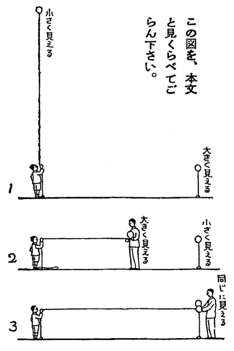

近所のおばさんなんかは、一太郎君を「
昔からのえらい発見や発明はみな、この「なぜ」と「どうすれば」の二つがもとになっていることは、みなさんもごぞんじでしょう。ニュートンという学者は、「ほかの物はおちるのに、なぜ、月だけはおちないのだろう」とふしぎに思い、その「なぜ」をどこまでもどこまでも考えていって、あの「引力の法則」というものを発見したのです。
また、飛行機を一ばんはじめに考え出した人は、「どうすれば、人間も鳥のように飛べるだろうか」ということを一心に考えつめたからこそ、それがもとになって、世界に今のように飛行機時代が来たのです。「なぜ」と「どうすれば」が、私たちにとって、どんなに大切かということは、このたった二つの例を考えただけでも、よくわかるではありませんか。
一太郎君はまだ小学校の六年生ですから、そんな大学者や大発明家のような、えらい智恵はありませんが、でも、「なぜ」と「どうすれば」を考えることでは、学校のお友だちのだれにも、ひけはとりませんでした。
学科のうちでは算数と理科がとくいで、算数のむずかしい問題をといたり、理科の実験をしたり、飛行機や機関車の模型をつくったり、望遠鏡や顕微鏡をくふうしてこしらえたり、そういうことが何よりもすきで、少年発明品展覧会に、自分で考え出した模型を出品して、ごほうびをいただいたこともあるくらいです。
それから、一太郎君はむずかしい謎をとくのもとくいでした。頓智でとくのではなくて、すじみちを立てて、よく考えてとくのです。でも、ほかの人には、一太郎君が頭の中で考えたすじみちはわからないものですから、いきなりむずかしい謎をといてみせますと、みんなびっくりしてしまい、それが評判になって、いつのまにか「智恵の一太郎」などと呼ばれるようになったわけです。
私はこれから、一太郎君がみんなを感心させたお話のうちから、皆さんの参考になりそうなのをえらんで、一つずつ書いて行くつもりですが、今度は最初のことですから、一太郎君がまだ五年生だったころの、ごくやさしいお話をいたしましょう。みなさんのうちには、一太郎君よりも、もっともっと考えぶかい、智恵のすぐれた方もいらっしゃるでしょうが、でも、このお話は、そういう方にも、きっとおもしろいだろうと思います。
それは、一太郎君がもう一月ほどで五年をおわって、六年に進もうという、ある春の日の夕方のことでした。お家から三百メートルほどはなれたところにある、広い原っぱで、一太郎君は五年生の
「オーイ、こんどは、もうれつな直球だよ」
良雄君は、大声にさけびながら、いきおいこめて、球を投げました。ところが、良雄君があまり力をいれすぎたものですから、球は、一太郎君の、はるか頭の上を飛びこして、うしろの池にボチャンとおちてしまいました。
「
一太郎君は良雄君にどなっておいて、いそいで池のふちにかけつけ、ゴムまりを拾おうとしましたが、まりは池のふちから二メートルもはなれた水の上に、ポッカリと浮かんでいて、長い棒でもなければ、とても取ることができないのです。
良雄君もかけつけて来て、池のふちにしゃがんで、両手で水をこちらにかきよせてみましたが、そんなことをすれば、球はかえって向こうの方へ行ってしまうばかりです。靴をぬいで、水の中にはいって、球のところまで行けばよいのですが、そこはどろ沼のようなきたない池でしたから、水の中にはいろうものなら、いきなりズブズブと底のどろの中へ足をふみこみ、ズボンも上着もどろまみれになってしまいます。どう考えても、長い棒がなくては、球はとれないのです。二人はしばらく、顔見合わせて立っていましたが、やがて良雄君が、
「僕、家へ行って
といって、かけ出して行きました。良雄君のお家の方が、一太郎君のお家よりも近いからです。
それから三分ほどたって、良雄君は長い竹をかついで、息をきらして、池のそばへかけて来ましたが、そこに立ってにこにこ笑っている一太郎君を見ますと、びっくりして立ちどまってしまいました。これはまたどうしたのでしょう。ゴムまりは一太郎君の手の中に、ちゃんと、もどっていたではありませんか。
「ア、君、どうして取ったの？」
良雄君はさもさもふしぎそうな顔をして、一太郎君の腰から下を見つめました。でも、一太郎君のズボンも靴も、靴下も、少しもぬれていないのです。球を取るために池の中へはいったのでないことは、一目でわかります。では、二メートルも向こうにある、あのまりをどうして、取ることができたのでしょう。
「だれかおとなの人に取ってもらったのじゃない」
「君が行ってから、だれもここを通りやしないよ」
「じゃ、どうして取ったのさ。へんだなあ。ほんとうかい、君。ほんとうに君が取ったのかい？」
良雄君は、どう考えてもわからないという顔つきです。
「君が行ってから、じっと考えていると、やり方がわかってきたんだよ。よく考えれば何でもないんだよ」
一太郎君はべつにとくいらしい様子もなく、にこにこしています。
「ア、わかった。智恵の一太郎が、またなんだか考え出したんだね。いってごらん。どうして取ったのさ」
そこで、一太郎君は、話しはじめました。
「あのね、僕、動物園の象の鼻のことを思いついたんだよ。君、知ってるかい。象におせんべいを投げてやるだろう。そのおせんべいが、象の鼻のとどかない所へおちると、象はどうしておせんべいを取るか知ってるかい。僕、いつか見たんだ。象はね、おせんべいの向こうの壁に、鼻でフーッと息をふきつけるんだよ。そうすると、その息の風が壁にあたって、こちらへかえってくるだろう。象の鼻の息ってすごいよ。だから、おせんべいがこちらの方へ、コロコロところがるのさ。象のやつすました顔でころがって来たおせんべいを、鼻でつまんで、口の中へ入れるんだよ」
「そうかい、さすがは智恵の一太郎だね。僕、知らなかったよ。で、それがどうしたのさ。ここには象なんていないじゃないか」
「だから、象の鼻のかわりになるものを考えてみたのさ。なんでもないんだよ。ホラこれさ」
一太郎君は、そういって、足もとの地面をゆびさしました。でも、良雄君には、まだわからないのです。
「なんにもないじゃないか。石がころがっているばかりじゃないか」
「だから、この石なんだよ。見ててごらん。君はきっと、なーんだ、そんなことかっていうにきまっているよ。ほら、あすこに木ぎれが浮いてるだろう。あれを取ってみるからね」
一太郎君はそういいながら、しゃがんで、そのへんにころがっていた、にぎりこぶしほどもある石をひろって、いきなり、それを池の中へ投げこみました。
すると、石は木ぎれの五六センチ向こうに落ちて、ドブンと大きな水しぶきをあげ、その水の動くいきおいにつれて、木ぎれは三十センチほども、岸の方へ、ただよいよりました。
波がしずまるのをまって、一太郎君は、又べつの石をひろい、前のように投げました。そして、次々と、五つの石を投げたのですが、一つ投げこむたびに、木ぎれは少しずつ岸の方へ近づいて、五つ目の石を投げた時には、木ぎれはもう、岸から手のとどくところに来ていました。一太郎君はしゃがんで、手をのばし、それをひろい上げました。
「ね、わかったかい。この石のたてる水しぶきが、象の鼻息のかわりなのさ」
「なーんだ。そんなことか」
良雄君は、さっきおどろいたのが、はずかしいというような顔つきです。
「ほらね、きっとそういうだろうと思った」
一太郎君は、そういって、丸い目をクリクリさせながら、やはりにこにこと笑っていました。
みなさん、一太郎君の考えはほんとうに、なんでもないことでした。
でも、「なーんだ」という良雄君には、それが考えられなかったではありませんか。ですから、これはやっぱり一太郎君の考えぶかさをあらわしているのです。
動物園の象の鼻を、気をつけてよく見ておいたおかげです。そして、この池ではどうすれば象の鼻と同じことが出来るかと、よく考えてみたおかげです。
みなさん、「どうすれば」の大切なことがおわかりでしょう。
［＃改ページ］
ある冬の日曜日の朝のことでした。その前の晩に、東京ではめずらしいほどの大雪が降って、庭も屋根も表の道も、あつい綿につつまれたように、一面まっ白になっていました。
明石一太郎君は、朝から近所の原っぱで、大ぜいのお友だちとはげしい雪投げをしました。
十五六人がＡＢ二組にわかれて、三十分ほども、雪玉を投げあいましたが、とうとう一太郎君の組がすばらしく勇勢でした。
一太郎君は同じ方角に帰る三人のお友だちと、高らかに歌を歌いながら、雪をサクサクとふみしめて歩いてきました。
「やあ、みんな、真赤な顔をして、はりきっているじゃないか。どこへ行って来たんだい」
声をかけられ、歌をやめて、その方を見ますと、大学生の高橋一郎さんが、自分の家の門の前に、ニコニコ笑って立っていました。この高橋さんは、いつもおもしろい、ためになるお話をしてくれたり、模型飛行機の競技会を開いてくれたり、野球の審判官になってくれたりするので、近所の少年たちに、たいへん人気のある、快活な学生さんなのです。
「雪投げをして来たんだ。僕たちの組はすごく勇勢だったよ」
少年の一人の北川君が、とくいらしく答えました。
「ふーん、そりゃよかったね、僕に知らせてくれりゃ、原っぱへ行って、君たちに雪投げのしかたを教えてやるんだったのになあ」
高橋さんはどこかにまだ子供っぽいところがありましたので、雪投げに加われなかったのが、いかにも残念だという顔をしましたが、ふと何かおもしろいことを思いだしたらしく、目をかがやかしていいました。
「あ、そうだ。君たちに一つ智恵だめしの問題を出してやろう。いいかい、雪投げというものは、ただ力くらべをするだけじゃない。智恵くらべもしなければならないのだ。雪投げをやるのに、どうすれば有利かということが、どんなに大切かということは、君たちもよく知っているだろう。もっと小さいことでいえば、探偵ね、あれがやっぱり力よりは智恵の仕事なんだよ。
ところで、かりに君たちが探偵として相手の様子をさぐりに行ったとするね。探偵のやり方にはいろいろあるが、もし雪がつもっていれば、その雪の上の足あとというものも、けっして見のがすことのできない、大切な手がかりなんだよ。
それについてね、僕はふと思いだしたんだが、君たちの智恵をためすのに実にいいものがあるんだ。こちらへ来てごらん」
高橋さんはそういって、自分の家の板塀のまがり角まで歩いて行き、そこのせまい横町をのぞきこみました。
「ごらん、この横町はめったに人の通らないところだ。だから雪はゆうべつもったまま、少しもとけていない。まるで白い布をしきつめたようだ。ところが、ここにただ一つ、こちらから人の歩いて行った足あとがある。靴じゃない、つまさきのところが二つにわれた足あとだから、
四人の少年はいわれるままに、塀ぎわを歩いて、そのせまい横町へ入って行きましたが、十メートルも行ったかと思うと、先に立っていた北川少年が、「おや」とびっくりしたような声を立てました。
その足袋はだしの足あとが、道の真中でぱったりととだえてしまっていたからです。そこから先には、雪の上にポツポツと小さな穴があいているばかりで、ずっとむこうの大通りまで、人の足あとというものは一つもありませんし、といって、あとへもどった足あともないのです。両がわには高い塀がつづいていて、塀ぎわまですきまなく雪がつもっているのですから、足あとを残さないで、どちらの塀へもたどりつくことはできません。ですから、足あとだけを見ますと、この人は雪の上をそこまで歩いて来て、とつぜん鳥のように空へまい上ってしまったのか、それとも、体がとけて、蒸気のように空中に立ちのぼってしまったとしか考えられないのです。
少年たちは、不思議さに、思わず顔を見合わせたまま、そこに立ちすくんでしまいました。
「どうだい、君たちはこの足あとの謎がとけるかね。この人は、いったい、ここまで歩いて来て、それからどうしたのだろう。まさかこのせまい横町へ、空から軽気球がおりて来て、その人をのせて行ったとは考えられないからね。どうだい？、［＃「どうだい？、」はママ］このわけがわかるかい」
高橋さんは、どうだ、この謎はむずかしいだろうといわぬばかりに、ニコニコ笑っています。
「へんだなあ」「わけがわからないや」少年たちは口々にそんなことをいって、ただ立ちどまっているばかりでしたが、謎をとくことの大すきな明石一太郎君だけは、熱心にそのへんを歩きまわって、何か手がかりはないかと、しらべはじめました。
「みんなも、ただ驚いているばかりじゃいけない。明石君のようにもっとそのへんをしらべてごらん。謎をとくのには、人の気のつかない、こまかいことを、よく注意して見るということが一番大切なんだよ。そして、その見たことを、すじみちを立てて考えるのだ。算数でも理科でも、そういう風にしてやれば、いつでも正しい答が出てくるのだよ」
高橋さんに教えられて、三人の少年が歩き出そうとしていた時でした。ずっと先の方へ行っていた明石一太郎君が、ニコニコしながら、かけもどって来ました。
「高橋さんわかりました。これは
啓ちゃんというのは、近所の酒屋さんの子供ですが、今朝の雪投げには、仲間入りをしなかったのです。
一太郎君の答を聞きますと、高橋さんが何もいわぬ先に、横から北川君が口出しをしました。
「へえ、歩いて行ったんだって？ でも、足あとがないじゃないか」
「足あとはないけれども、歩いて行ったんだよ。君、あすこをごらん。雪の上にポツポツと小さな穴があいているだろう。あれはなんだと思う？」
それはさしわたし三センチほどの小さな穴が、たびはだしの足あとがとだえているへんから、七十センチぐらいの間をおいて、ポツポツとむこうの大通りまでつづいているのです。
「雪の上に石を投げた穴みたいだね。それとも、棒の先でつついたのかしら」
木村君という少年が、小首をかしげていいました。
「アハハハ……、棒でつついたんだって？ じゃ誰がその棒を持っていたんだい。その人の足あとがないじゃないか」
北川君が、こういって木村君の考えをうちけしました。すると今度は、一太郎少年が、妙なことをいい出しました。
「北川君、君の方がまちがっているよ。あれは、やっぱり棒でつついた穴なんだよ」
「えっ、なんだって？ それじゃ君は、棒がひとりで動きまわったっていうのかい」
北川少年はあっけにとられて聞き返しました。
「そうじゃないよ。人が動かしたんだよ。君は、それじゃその人の足あとがつくはずだっていうのだろう。ところが、足あとをつけないで棒を動かすやり方が、たった一つあるんだよ。よく考えてごらん。なんでもないことなんだよ」
一太郎君はいよいよへんなことをいいます。
「へえ、そんなことができるのかい。わからないなあ」
北川君も、木村君も、もう一人の少年も、なにがなんだか、わけがわからないという顔つきです。
「君たちわからないの？ それじゃ、僕、啓ちゃんをここへつれて来るよ。そうすれば、一ぺんにわかってしまうんだから。ね、高橋さんいいでしょう」
大学生の高橋さんは、少年たちの問答を、ニコニコしながら聞いていましたが、一太郎君に声をかけられて、大きくうなずいて見せました。
一太郎君はいきなりかけ出して行きましたが、しばらくしますと、むこうの大通りから、一太郎君のニコニコ顔があらわれ、そのうしろに、高い竹馬にのった酒屋の啓ちゃんが、ヒョイヒョイと両方の竹馬の先をあげて、やってくるのが見えました。
「なーんだ、竹馬だったのか」
三人の少年は頭をかきながら、口をそろえてつぶやきました。この近所には、あまり竹馬にのるものがなく、お友だちの中では、啓ちゃんがただひとり竹馬を持っていることを、つい忘れていたのです。
あとで啓ちゃんが話したところによりますと、啓ちゃんは今朝、みんなが雪投げをやっているころは、一人で竹馬にのって、そのへんの町を歩きまわったのですが、ちょうどこの横町の入口のところで、足袋のこはぜがはずれて、ぬげそうになったものですから、一度竹馬をおりて、それをなおして、そのまま十メートルほど竹馬をかかえて歩いてから、また乗って行ったのです。大通りの方はたくさんの人の足あとで、雪がふみけされていたので、そのあとは残りませんでしたが、横町は誰も通っていなかったので、啓ちゃんが、たびをなおしてから歩いた足あとが、はっきり残ったわけです。
でも、もし啓ちゃんが、竹馬が下手でしたら、たぶん塀ぎわまで行って、塀にもたれて竹馬にのったでしょうから、雪の上にそのあとがついて、謎はもっと早くとけたのでしょう。ところが、雪投げよりは竹馬の方が好きなほどの啓ちゃんですから、なかなかの名人で、道の真中でも平気で、ヒョイヒョイと竹馬に足をのせて、そのまま歩いて行くことができたものですから、足あとの謎をとくのが、あんなにむずかしくなったわけでした。
そこで、大学生の高橋さんは、一太郎君の考え深いのを、たいそうほめましたが、そのあとで、ほかの三人の少年たちに、こんなことをいいました。
「君たちは、なーんだそんなことかというけれど、そのなんでもないことが、君たちにはわからなかったじゃないか。足あとのかわりに、まるい小さな穴がならんでいるのは『なぜ』ということを、よく考えてみれば、竹馬という答のほかはないはずだよ。それを考えつくのが智恵というものだ。それに気がつかなかった君たちは、謎をとくことでは、やっぱり智恵の一太郎君にはかなわないわけだね」
［＃改ページ］
「お父さん、何かおもしろい謎の題を出して下さいよ。今日は、うんとむずかしいのをね」
「そうら、また一太郎のいつものおねだりがはじまったね、よしよし、それじゃあ今夜は、お父さんも頭をしぼって、うんとむずかしい問題を出してやるぞ」
赤々と炭火のもえた
それは真冬の二月はじめのことで、庭のお池にはりつめた氷が、昼間もとけないで、一日一日と厚みをまして行くような、寒い寒いころでしたが、部屋の中は、大ぜいがあつまっているのと、火鉢のおかげで、心持よいあたたかさです。
「ウン、それじゃあ、こういう謎がとけるかね」
しばらく考えておいでになったお父さんが、ニッコリしておはじめになりました。
「いいかい。ここにお
しかしお父さんのは、そういうことではなくて、ただの水をつかって、火をもやしてごらんというのだよ。わかったかい。どうだ、むずかしいだろう」
お父さんはそういってお笑いになりましたが、なるほどむずかしい問題です。水というものは、火を消す力はもっていますけれど、火をもやす力なんて、まるでもっていないようにみえます。水と火とは、まったくあべこべのものです。そのあべこべの水でもって、火をつくれという難題ですから、さすがの智恵の一太郎君もびっくりしてしまいました。
「お父さん、それ
「いや、そんな頓智の問題じゃない。ほんとうに火がもえなくてはいけないのだよ。だから、この問題は謎というよりは、理科の智恵だめしといった方が正しいのだ」
「だって、お父さん、そんなこと、ほんとうにできるのですか」
「できるとも。お父さんができない問題なんか出すはずがないじゃないか。すじみちを立てて、よく考えてみるんだ。そうすれば、なあんだ、そんなことかと、びっくりするくらいやさしい問題なんだよ。ではね、少しばかり、考え方の手びきをしてあげよう。いいかい、こういう問題にぶっつかった時にはね、世の中に火をもやすやり方が幾つあるか、一つ一つ思い出してみるんだよ。さあ、お前の知っているだけ、それをいってごらん」
「ええ、じゃあ言いますよ。マッチ、ライター、ええと、それから
「ああ、火打石をよく知っていたね。明治以前にはマッチというものがなくて、みな火打石を使っていたのだ。石と鉄と打ちあわせてね、その火花を、お
「ええ、いつか先生からききました。かたい木をきりのようにけずって、そのとがった先を別の板にあてがって、きりをもむように、もむんでしょう。そうして長いあいだもんでいると、すれあっているところが、だんだん熱くなって、おしまいには火がもえ出すんですって。今でも野蛮人の中には、そうして火をつくっているものがあるんですってね」
「そうだ。なかなかよく覚えていたね。大昔から今までに、私たち人間が火をつくる道具に使ったのは、まあ、そんなものだが、その外にもまだ、いろいろのやり方がある。お前も知っているだろう」
「ええ、知っています。老眼鏡の玉を太陽の光にあてて、もえやすい物に焦点を作れば、火がとれるんです。僕、いくどもやってみたことがあります」
「そうだね。それからまだあるよ。電気の火花はお前もよく知っているね。それに電熱器もそうだし、大砲や魚雷のように、火薬を爆発させても、火をふき出す。その外にもまだいろいろ火をつくるやり方があるが、お父さんの問題はそんなにむずかしく考えなくてもいいのだ。誰にでもわかるやさしいことなんだよ。
水で火をもやすというと、なんだかとっぴに思われるけれど、実をいうと、さっきからお前が答えた中に、それと同じやり方があるんだ。今までかぞえ上げた火のつくり方を、一つ一つ思い出して、よく考えてごらん。そうすれば、あああれかと気がつくはずだ。びっくりするほどやさしいことなんだよ」
お父さんが「やさしいやさしい」とおっしゃるので、一太郎君は、そんなやさしい問題がとけなくては、くやしいので、いっしょうけんめいに考えましたが、今にもわかりそうでいて、なかなかわからないのです。「これですよ、これですよ」といって、その謎の正体が、目の前でおどっているような気がするのですが、それがどうしても、はっきりとつかめないのです。
「ハハハ……、すっかり考えこんでしまったね。じゃあこれは
お父さんはそういって、火鉢の前から立上られましたが、ふと気がついたように、一太郎君を見て、こんなことをおっしゃるのでした。
「もう一つだけ言っておくことがある。それはね、水で火をもやすのは、今ごろのようなごく寒い時でないと出来ないということだよ。これが謎をとく一つの手がかりなんだ。どうだ、まだ気がつかないかね。お椀に水を半分ばかり、いや三分の一ぐらいの方がいいかもしれない。ハハハ……、まあ、ゆっくり考えてごらん」
お父さんが、書斎へ行っておしまいになったものですから、一太郎君はお祖父さんやお母さんと、少しお話をしたあとで、自分も勉強部屋にこもって、この難題をいっしょうけんめいに考えました。そして、その晩眠る前に、なんだかニコニコしながら、お母さんにお椀を一つ借りて、自分の部屋へ持ってはいりました。一太郎君はうまく謎をといたのでしょうか。お椀で何をしようというのでしょう。
みなさんはもうおわかりですか。一太郎君が知っていただけのことは、みなさんもすっかりごぞんじなのですよ。もしまだわからなければここで本をおいて、一つ考えてみて下さい。
さて、お話は飛んで、そのあくる朝のことです。寒さはきびしいけれど、よく晴れた日曜日でした。朝ごはんの時、お父さんがゆうべの謎はとけたかとおたずねになりますと、一太郎君はニコニコ笑って、「ええ、今に水で火をもやして見せます」と、さも自信ありげに答えましたが、やがて、ごはんがすんでしばらくしますと、庭の方で、何だかパチパチとたき火でもしているような音がきこえはじめました。
それに気づいて、お父さんとお祖父さんとが、縁側に出てごらんになりますと、一太郎君が庭の真中に落葉をあつめて、たき火をしていることがわかりました。
「一太郎、えらいぞ。うまく謎をといたね」
「ええ、これで火をもやしつけたんですよ」
一太郎君が大声に答えて、右手でつまんでさし出したものを見ますと、それは、さしわたし八センチほどの、大きな眼鏡の玉の形をした氷のかたまりでした。
「僕、ゆうべあれからいっしょうけんめいに考えていると、すっかり謎がとけちゃったんです。水で火をつくるのには、水を凸レンズの形にこおらせて、それで太陽の火をとればいいんだということがわかったのです。
ゆうべお父さんがお椀に三分の一の水っておっしゃったでしょう。だからハハアンと思ったのです。お椀の底は丸いから、その中で水がこおれば、凸レンズの形になるんですもの。
それで、ゆうべ、寝る前に、お椀に水を入れて、窓の外へ出しておいたんです。けさ戸をあけてみると、お椀の水は底まで全部こおっていました。でも、それをお椀からとりはずすのがむずかしかったけれど、考えているうちに、お椀をあたためればいいということがわかったのです。それで洗面器にお湯を入れて、その中へお椀をつけてみたら、わけなく氷のかたまりがとれたんです。
それからお祖父さんのお灸のもぐさを少しいただいて、氷の凸レンズに太陽の光をあてて、火をつけたんです。それからね、新聞紙のきれっぱしを、火のついたもぐさにつけて、フーフーと口でふいていると、パッと火がもえて来たんです。それをもとにして、こんな大きなたき火が出来たんですよ」
一太郎君は、みごとに水から火をつくりました。そして、それを実に順序正しく説明したのです。それを聞いて、お祖父さんもお父さんも、すっかり感心なさいました。
「フーム、さすがは智恵の一太郎じゃ。白状すると、わしもゆうべ、あれから、父さんの難題をいろいろ考えてみたのじゃが、どうしてもわからなかったのだよ。ハハハ……」
お祖父さんは、胸にたれた真白なお髭をふるわせてお笑いになり、一太郎君の大てがらを、くりかえしおほめになるのでした。
［＃改ページ］
ある日、明石一太郎が学校から帰って、茶の間のお母さんのところへ行って、「ただ今」と言いますと、お母さんは待ちかねていたように、こんなことをおっしゃるのでした。
「一太郎さん、今日たいへんなことがあったのですよ。妙子ちゃんが、幼稚園から帰りに、そこの大通りでころんで、今にも自動車にひかれそうになったんですって」
「え、自動車に？」
一太郎は、かわいい妹の妙子ちゃんが、そんな目にあったときいて、びっくりして思わず大きな声をたてました。
「いいえ、べつにけがはしなかったの。ちょうどあんたぐらいの小学校の生徒さんが、妙子ちゃんを助けおこして、わざわざうちの門のところまでつれて来て下さったのです。
妙子ちゃんが言うのには、ころんだ時、カバンがひらいて、中のものが、みんな道へこぼれたのですって。筆入もふたがとれて、クレヨンがバラバラと、そのへんにちらばったのですって。そこへ、むこうから自動車が走って来たので、今いった小学校の生徒さんが、とんで来て、妙子ちゃんを助けおこし、自動車をよけてから、こぼれたものを、みんなひろって、カバンの中へ入れて、それから、泣いている妙子ちゃんをつれて、門のところまで送って下さったのです」
「誰だろう。僕の学校の生徒かしら」
「ええ、そうらしいのよ、一太郎さんのお友だちかもしれないわ。お母さんが出て行くと、走っていってしまったので、うしろ姿だけは見たけれど、誰だかわからないのです。妙子ちゃんも知らないって言うの。
でも、妙子ちゃんが、ここの子だっていうことを知っていたのを見ると、やはり、一太郎さんのお友だちか知れないわ。あした学校へ行ったら、さがして、お礼を言って下さい」
「そうですね。……でもね、お母さん、もしその生徒が、僕のなかよしの友だちだとすると、なかなかさがし出せないかも知れませんよ」
「なぜなの？」
一太郎君が妙なことを言ったので、お母さんは不思議そうな顔をなさいました。
「あのね、僕の組で、なかよしの友だちが六人いるんです。その六人が約束して、一日一善っていう事をやっているんです。なんでもいいから、人のためになる事を、一日に一つはかならずやるっていう約束なんです。僕も毎日やっているんです。でも、何をしたかは言えません。言っちゃいけないっていう約束なんです。
ほめられたりお礼をいわれたりするためにやるんじゃなくって、ただいい事だからやるんでしょう。だから、人に知られないようにこっそりやらなけりゃいけないのです。もしそれを人に話したり、じまんしたりすれば、その日はなにもいい事をしなかったのと同じになっちゃうんです。
「まあ、そんな約束をしているの。感心ね。でも、今日のは特別にいいことなんだから、いっても零にならないことにして、その生徒さんを白状させなさいよ。わかったら、お母さんもお礼を言いたいのですから」
「じゃ、僕、やってみます」
一太郎は、それから、妹の妙子ちゃんのところへ行って、いろいろたずねてみましたけれど、なにをいうにも幼い子供のことであり、その時はまた夢中だったものですから、はっきりとしたことがわからず、これという手がかりもつかめません。一太郎君はこまったような顔をして、しばらく考えこんでいましたが、やがて、なにを考えついたのか、「あ、そうだ」と、ひとりごとを言ったかと思うと、いきなり、妙子ちゃんのカバンの中から、黒地に赤い花の模様のあるセルロイドの筆入を取出しました。妙子ちゃんがころんだ時、中のクレヨンが道にちらばったという、あの筆入です。
「ちょっと、これを兄さんにかしてね」
一太郎君はそう言って、その筆入をだいじそうに持って、自分の勉強部屋に入りました。そして、机のひきだしから拡大鏡を取出し、筆入のふたを取って、その裏表を熱心にのぞきこんでいましたが、しばらくすると、なにを見つけたのか、
「あ、あったぞ、これだ、これだ」
と、さもうれしそうにつぶやくのでした。皆さん一太郎君は、いったい何を発見したのでしょう。
さて、そのあくる日は、朝からシトシトと雨の降りつづく陰気な日でしたが、一太郎君は何か楽しい事でもあるらしく、いそいそとして学校へ出かけました。
生徒たちは、広い雨天体操場に入って、授業のはじまるのを待つのでしたが、駈けまわるもの、とっくみ合いをするもの、あちらでもこちらでも、ワーッ、ワーッと、おもちゃ箱でもひっくり返したようなさわぎです。
一太郎君は、その中から「一日一善」の六人のお友だちをさがし出して、みんなに
一太郎君があまりくどくたずねるものですから、六人の中でも一番なかよしの中村君などは、こんなことを言って、からかうのです。
「そんなに疑うのなら、君の智恵で、僕らのうちの誰がやったのだか、さがし出せばいいじゃないか。君は智恵の一太郎じゃないか」
すると、みんながおもしろそうに、ワーッとはやしたてるのです。
「ようし、それじゃ、僕にも考えがある」
一太郎君は、くやしくなって、おこったような顔をして、きっぱりと言うのでした。
間もなく始業のベルが鳴り出しましたので、みんなはそのまま整列して教室に入りましたが、その第一時間目の授業がすんで、また雨天体操場にもどりますと、一太郎君は何を思ったのか、一方のすみのガラス窓のそばへ行って、立ちどまったのです。
そして、窓のガラスにハーッと息をふきかけて、白くくもったところへ、自分の両手の親指をぐっとおしつけました。すると、指の先のうずまきのあとが、ガラスの上にハッキリとあらわれたのです。一太郎君はポケットに用意してきた拡大鏡をとり出して、その二つのうずまきのあとを、熱心にのぞきはじめたものです。
なかよしの六人のお友だちは、それを見つけると、何をやっているのかと、次々にそこへ集って来ました。そして、一太郎君の拡大鏡を、横からのぞきこみながら、
「君、なにをしているの？」「なにが見えるの？」と口々にたずねるのでした。
「君たち知ってるかい。これ指紋っていうんだよ。みんな自分の指の先を見てごらん。きれいなうずまきになっているだろう。このうずまきは、人によってみんなちがうんだって。何千人、何万人よっても、同じうずまきなんて、一つもないんだって。人間は、一人一人顔がちがうように、指のうずまきもちがっているんだよ。君たちもこのガラスに、うずまきをうつして見るといいや。こうしてね、両手の親指をおしつけるんだよ。親指のうずまきが一等はっきりうつるから」
一太郎君が、いかにもおもしろそうに、やって見せるものですから、みんなもそのまねをして、前のガラスにハーッと息をかけて、両手の親指をおしつけました。少したって、息のくもりが消えると、うずまきのあとも見えなくなってしまいますが、又、ハーッと息をかけると、ありありとあらわれて来るのです。
みんなは次々と、一太郎君の拡大鏡をかりて、自分の指のあとと、お友だちの指のあとをくらべたりして、おもしろがっていましたが、やがてそれにもあきると、六人は一太郎君を残して、どこかへ行ってしまいました。
みんながいなくなるのを待って、一太郎君は、一方のポケットから、ハンケチに包んだ細長いものを、だいじそうに取出しました。ハンケチをひらくと、中から、妙子ちゃんの筆入のふたが出てきました。
一太郎君はその筆入のふたの裏がわに、ハーッと息をかけて、拡大鏡でしばらくのぞきこんでから、今度は、前の窓ガラスに、ハーッハーッと、いくども息をふきかけて、六人のお友だちの残して行った指のあとを、一つ一つ見くらべていましたが、やがて、
「あ、これだ、これだ、すっかり同じだ。やっぱりそうなんだ。妙子ちゃんを助けてくれたのは、北村君だったんだ」
とうれしそうにつぶやきました。
皆さん、もうおわかりでしょう。昨日妙子ちゃんがころんだ時、カバンの中から筆入がとび出して、中のクレヨンが地面にちらまかれたのを、ひろい集めてくれましたね。その時の指のあとが、すべすべしたセルロイドの筆入に残っていたのです。
筆入のふたの表と裏には、妙子ちゃんのらしい小さい指のあとが、たくさんついていましたが、それとは別に、すこし大きい指のあとがいくつか残っていたのです。そして、ふたの裏がわに一ばんハッキリ残っていたのは、その生徒がふたをつかんだ時の、親指のあとにちがいないように思われたのです。
それで、一太郎君は、その筆入のふたを、妙子ちゃんにかりて、わざわざ学校へ持って来たのですが、今、窓ガラスのお友だちの指のあとと、一つ一つ見くらべますと、北村君の残して行った、右の親指のうずまきが、筆入のふたの裏のうずまきと、寸分ちがわないことがわかったのです。
指のうずまきは、顔がちがうのと同じように、人によって皆ちがうのですから、こんなたしかな証拠はありません。その上、この親指には、小さい傷のあとが残っていて、筆入の方も、ガラスの方も、それがすっかり同じなのですから、もう少しもうたがいはありません。とうとう発見したのです。妙子ちゃんを助けたのは北村君だということがはっきりわかったのです。
そこで、一太郎君は、北村君をさがし出して、証拠をつきつけて見せましたので、北村君もかくしきれず、昨日の事をすっかり白状してしまいました。そして、頭をかきながら、
「つまんないなあ。せっかくいい事をしたのに、これで昨日の一日一善が零になっちゃった」
と、ざんねんそうに言うのでした。
一太郎君がお家に帰って、そのことを話しますと、お母さんが、さっそく北村君のところへお礼においでになりました。そればかりでなく、いつかこのことが先生のお耳にまではいってしまったのです。
ある日、先生が教室で、近頃こんな感心な出来事があったといって、みんなにこの事をくわしくお話しになりました。そして、
「こんないい事をして、かくしていた北村君もえらいが、それを智恵で見つけだした明石君もえらいものだ。一太郎君は名探偵だ」と言って、たいそうおほめになったものですから、二人はうれしいような、はずかしいような気持で、思わず真赤になってしまいました。
［＃改ページ］
うららかに晴れわたった、春の日曜日の朝はやく、明石一太郎君は、
きのうの土曜日の午後から、とまりがけで、田舎の伯父さんのうちへ遊びに来ているのです。田舎といっても、そこは東京都の中で、中央線の電車で行けるところですが、農学士の伯父さんは、そこの広い土地で、いろいろなめずらしい植物をそだてていらっしゃるのです。大きなガラスのおうちのような温室もあって、その中には南洋の植物がたくさんならんでいます。一太郎君は、そういうめずらしい植物を見たり、それについて伯父さんのお話をきいたりするのがすきでたまらないのでした。
けさは、六時ごろに起きて、まだ朝ごはんもたべないうちに、伯父さんにさそわれて、近所のたんぼ道を散歩しているのです。青々としたたんぼの中を、細いきれいな小川がながれています。その小川の堤のようになった細道を、伯父さんが先にたち、一太郎君はそのあとを追うようにして歩いているのです。
細道の両側には、朝露にぬれた草がおいしげっていて、それが足にさわるたびに、ひやっとつめたくて、なんともいえないすがすがしい心持です。
二人はしばらく、だまって歩いていましたが、とつぜん、伯父さんがうしろをふりむいてにこにこしながら、
「一太郎、一つ謎を出そうか」
と、おっしゃるのでした。
「ええ、出して下さい」
一太郎君は、いつも伯父さんの謎はわけなくとけるので、今日もうまくといてみせるぞと、自信たっぷりで答えました。
「いいかい。自分のからだの何百倍もあるような広い川に、一人の力で、たった一時間か二時間のうちに、長い橋をかけるものがいるんだよ。それは人間じゃない。人間にはとてもそんなことはできやしない。だが、人間にたとえれば、東京の
一太郎君は、そんなえらいものが、人間のほかにいるんだろうかと、びっくりしてしまいました。そして、しばらくの間、いろいろと考えてみましたが、どうしてもわからないのです。
「伯父さん、僕、わかりません」
正直にいって、ちょっと赤くなって、頭をかきました。
「ハハハ……、こんなやさしい謎が、智恵の一太郎にとけないなんて、今日はどうかしているね。それじゃ種あかしをしようか。なんでもないんだよ。ほら、あすこをごらん。あれがその橋なんだよ」
伯父さんは、そういって、すぐそばの小川の上を指さしました。
「え、どれが？」
一太郎君にはまだわからないのです。
「あのきれいな
いわれてみると一メートルほどのはばの小川の、むこう岸の木の枝へと、大きな蜘蛛の巣がはってあるのです。
木の枝の上の方と、少し下の方とに、二本の丈夫な蜘蛛の糸が、小川を横切ってはりわたしてあって、そこの二本の糸の間に、あのからかさをひろげたような、蜘蛛の網が見えるのですが、それに朝露の玉が一めんについているものですから、まるで宝石をちりばめたように、きらきらと美しくかがやいているのでした。
「なんだ、橋をかける名人というのは、蜘蛛のことなんですか。でも、僕は蜘蛛っていう虫はあまりすきでないんです。あの恰好を見るとぞーっとするんです」
一太郎君が顔をしかめていいますと、伯父さんは待っていたといわぬばかりに、
「お前が蜘蛛をこわがることは、よく知っているよ。だから、今日はお前に蜘蛛という虫のえらいところを、よく見せようと思ったのだ。
この感心な虫が、なぜそんなにいやなのだね。なるほど蜘蛛は、網にかかった、はえだとか、あぶだとか、もっと大きな蝶なども、えじきにしてたべてしまうけれど、それは蜘蛛が悪者だからではない。神様がそういうくらしをするように、おこしらえになったからなのだ。蜘蛛は勇敢な猟師なのだよ。人間だって、鉄砲で猪や鹿をうったり、網で魚をとったりするじゃないか。蜘蛛はそういう猟師をしてくらすように生まれついた虫なんだよ。
なんという熱心な猟師だろう。あの自分のからだの何百倍、何千倍とあるような大きな網を、一時間か二時間であんでしまうんだよ。そして、雀や、風なんかに網をやぶられると、一日に何度でもしんぼうづよく同じ網をはりなおすんだよ。お前にこんなまねができるかね。いや、どんなえらい大人にだって、こんなすばらしい仕事はなかなかできやしないんだよ。
それにあの網のきれいなことをごらん。まるで定規とコンパスをつかってかいた模様のように美しくできているじゃないか。感心な虫だとは思わないかね」
いわれてみますと、なるほどびっくりするほどえらい仕事をする感心な虫だということが、一太郎君にもわかってきました。
「まだそれだけじゃない。この虫はもっとえらいことをするんだよ。伯父さんが橋をかけるといったのは、あのむこうの枝から、こちらの枝にはってある二本のふとい糸のことなんだが、蜘蛛はどうしてあの二本の糸をかけると思うね。これは謎ではないが、なかなかむずかしい問題だよ。お前に考えられるかい。枝と枝の間には、蜘蛛のからだの何百倍というはばのある小川が流れているんだよ。人間でいえば、隅田川ぐらいの大きな川なんだ。
蜘蛛には、この
一太郎君は、それをきいてすっかり驚いてしまいました。
「ほんとだ。僕、今までうっかりしていたけれど、考えてみると、不思議ですね。蜘蛛っていうやつは、僕らの思いもおよばない力を持っているんですね」
「じゃ、一つ蜘蛛と智恵くらべをしてごらん。どうしてあの糸をはるんだか、お前の智恵で考えだしてごらん」
伯父さんにそういわれますと、一太郎君はたいへんなことになったと思いました。なんだかこの智恵くらべでは、まけそうな気がしたからです。でも、一太郎君はいっしょうけんめいに頭をしぼって、やっと一つの答を見つけだしました。
「伯父さん、わかりました。蜘蛛はぶらんこをするんでしょう。木の枝の高いところへ糸のはしをくっつけて、腹から糸をたぐり出しながら、自分の糸にぶらさがって、だんだん下へおりてくるのです。そして、その糸が、うんと長くなった時に、ブランブランと風にのってぶらんこをはじめて、むこう側の木の枝へとりつくのでしょう」
「うん、それもやる。しかし、この場合じっさいは、そんなにうまく行くものじゃないよ。なにしろ川のはばは一メートルもあるんだからね。いくら身がかるいといっても、そんなに大きくぶらんこをゆするのは、むずかしいことだよ。
もっとうまいやり方があるんだ。なんでもないことなんだよ。口でいうよりも、実物を見た方がいい、きっと、どこかにいま橋をかけようとしている蜘蛛がいるにちがいないよ。一つそいつをさがしてみようじゃないか」
伯父さんはそういって、小川のふちを、立木のあるところでは立ちどまって、念入りに木の枝をしらべながら、前へ前へと歩いて行きましたが、およそ百メートルも歩いたころ、やっとそれが見つかったらしく、小川のむこう側の猫柳の木を指さして、
「ほら、ここにいた。ごらん、ちょうどいま、橋をかけようとしているところだよ」
よく見ますと、その猫柳のなかほどの枝から、一本の目にもとまらないような、細い細い蜘蛛の糸が、一メートルぐらいの長さにのびて、それがそよ風にふかれて、フワフワと小川の上を越し、今にもこちらの側の木の枝にとどきそうになっているのです。
「わけはないだろう。糸だけをグングン出して、こうして風にふかせておけば、自分がぶらんこなんかするよりも、ずっとらくにこちらの岸にとどくわけだからね。蜘蛛の糸はごく軽いものだから、ちょっと風がふきさえすれば、あんなふうに横へ一文字になびくのだよ。
糸のもとのところを見てごらん。きれいな女郎蜘蛛が、木の枝にとまって、うしろ足を糸の根元にかけて、じっと考えているだろう。ああして糸の先が、何かにひっかかるのを待っているんだよ。ひっかかれば、そのひびきが糸をつたって蜘蛛の足に感じるんだ。
あ、うまくこちらの枝にとどいたよ。糸にはねばりけがあるので、くっついたら、もうはなれやしない。ほら、ごらん、女郎蜘蛛が動き出した。足で糸をひっぱって、ほんとうにこちらの枝にくっついているかどうかを、ためしているんだよ。
見ててごらん。今にあの蜘蛛は、糸の橋をわたって、こちら側へやって来るよ。そして、二度も三度も行ったり来たりするんだ。それはね、あの糸をふとく丈夫にするためなんだよ。行き来しながら、たえず腹から糸を出して、はじめの糸にくっつけて、ふとくして行くんだ。あの一本の糸の橋が、網をつくる土台になるんだからね。できるだけ丈夫にしておかなければならないのだよ」
二人はそこにしゃがんで、じっと蜘蛛のしぐさを眺めていました。伯父さんのおっしゃる通りです。蜘蛛は二三度行ったり来たりして、はじめの糸を丈夫にしておいてから、その糸を足場にして、少し下の方に、第二の橋をわたしました。それから、二本の橋の間に、ななめの糸を幾本もはって、外がこいをつくってしまいますと、そのまん中に、あのからかさをひらいたような、美しい網をあみはじめるのです。
その網が半分ほどもできあがるまでには、一時間以上もかかりましたが、一太郎君は、その間、身動きもしないで、この小虫のすばらしい仕事ぶりに見とれていました。あきるどころか、見ていればいるほど、感心の度がふかくなって、おしまいには、それが蜘蛛ではなくて、人間の美しい曲芸師のようにさえ感じられてくるのでした。
晴れわたった青々とした空を背にして、銀色に光る細糸の上で、びっくりするような空中曲芸をえんじている曲芸師――女郎蜘蛛は、だんだらぞめの衣裳を着て、その衣裳にはきらきらとかがやく金銀のかざりさえついているのです。まあなんという美しさでしょう。
「ハハハ……、すっかり感心しているね。どうだね、こいつはなかなかえらい虫だろう。お前は、こんな小さな虫に、これほどの力をおさずけになった神様を、すばらしいとは思わないかね」
伯父さんの声に、一太郎君は、はっと夢をやぶられたように、ふりむきました。そして、うっとりとした顔で、
「ええ、僕、蜘蛛がすきになってしまいました」
と答えるのでした。
「ほんとうに神様はすばらしい」
一太郎君は心の中でくり返しました。すると、世界中がなんだか不思議なすばらしいことで一ぱいになっているように感じられて来ました。そして、この世の中が、きのうまでの二倍も、三倍も、十倍も、たのしいものに思われてくるのでした。
［＃改ページ］
ある朝、明石一太郎君のお
「一太郎、お前がいたずらをしたんじゃあるまいな」
お祖父さんは、そばにいた一太郎君を見て、笑いながら、おっしゃるのでした。
「いいえ、僕、いたずらなんかしませんよ。でもね、お祖父さん、僕が新聞をよめるようにしてあげましょうか」
一太郎君が妙なことをいいました。
「よめるようにといって、お前がよんで聞かせてくれるのかね」
「いいえ、そうじゃありません。お祖父さんがおよみになるんです。眼鏡の代りになるものを、僕が作ってあげましょうかっていうのですよ」
「眼鏡の代りになるものだって。ハハハハハハハ、ほんとうにそんな便利なものがあればいいんだがね」
お祖父さんは、一太郎君がじょうだんをいっているのだとお考えになったのです。胸にたれた真白なお髭をふるわせて、お笑いになりました。
「お祖父さん、うそだとお思いになるのですか。じゃ今、僕が作って来ますからね。待ってて下さいね。三分もかからないのですよ」
一太郎君は、そう言いすてて、自分の勉強部屋の方へ行きました。
みなさん、一太郎君はいったい、どんなものを作ってくるのでしょうか。一つあててみて下さい。今は夏のはじめですから、いつかのように氷の眼鏡玉なんて、できるはずはありません。むろんレンズの拡大鏡でもないのです。そんなものでは代用品とはいえませんからね。
やがて、一太郎君がニコニコしながら、もってきたのは、郵便はがきを縦に半分に切ったほどの、白い画用紙だったのです。
「お祖父さん、眼鏡の代りというのは、これですよ」
その画用紙を見て、お祖父さんはへんな顔をなさいました。
「おやおや、ただの厚紙じゃないか。そんなものが眼鏡の代りになるのかい」
「ええ、そうなんです。不思議でしょう。こうして見るんですよ」
一太郎君は、その細長い画用紙を横にして、両方の目の前にあてて見せました。
「ちょうど、目のところに小さい穴をあけてあるんです。両方の目に合うように二つ穴があけてあるんですよ。その穴からのぞくんです」
「ほほう、そうすると、新聞がよめるというのかね」
「ええ、よめるんです。明かるいところでなくちゃだめですよ。縁がわに出て、やってごらんなさい。きっとよめますから」
お祖父さんは、あんまり一太郎君がすすめるものですから、明かるい縁がわに出て、その画用紙を目にあてて、新聞をのぞいてごらんになりました。
小さな小さな穴を、ちょうど目のところにあてがうのに、ちょっと骨がおれましたが、やがて、その穴から、新聞の活字が、まるで眼鏡をかけたように、はっきり見えてきました。
「うむ、不思議だ。これは不思議だ。よめるよ。小さな振り仮名まで、よくよめるよ」
お祖父さんはびっくりしたように大きな声でおっしゃるのです。
すると、その声が聞えたのか、となり部屋から、お父さんが出ておいでになりました。
「何を感心していらっしゃるのです。又、一太郎が何かやったのですか」
「いや、この子には、時々おどろかされるよ。こんな厚紙に穴をあけただけで、老眼鏡で見るように、新聞の字がよく見えるのだ」
「どれどれ、私にも一つ見せて下さい」
お父さんは、その画用紙を目にあてて、新聞を近よせ、しばらくのぞいておいでになりましたが、
「ふーむ、なるほど、拡大鏡で見るように、大きく見えますね。一太郎、これはお前が考えついたのか」
と感心したように、おたずねになりました。
「ええ、僕が考えたんです」
「どうして考えついたか話してごらん。お父さんも、こんな手軽な眼鏡があろうとは、思いもつかなかったからね」
そこで、一太郎君は、この不思議な眼鏡を考えつくまでのすじみちを、次のように話しはじめました。
「僕、小さい時、目を細くして、明かるいところを見ていたら、目の前に、太い線のようなものが、幾本も見えたんです。僕、びっくりしてしまったんです。
よく考えてみたら、それが僕のこのまつ毛だったのですよ。
それから、僕、いろんなものをためしてみたんです。目を糸のように細くして、そのすぐ前に、指の先を出すと、指紋が拡大鏡で見るようにはっきり見えるのです。僕、それが不思議でたまらないので、幾度もためしてみたのです。
理科でレンズのことを習ったとき、そのことを、すぐ思いだしました。そして、レンズがなくても、目をうんと細くすれば、いろんなものがよく見えるということからいいことを思いついたんですよ。目を細める代りに、厚紙に穴をあけて、のぞいて見るっていう
それで、僕、厚紙を眼鏡の形に切りぬいて、それに穴を二つあけて、ひもをつければ、お祖父さんの眼鏡ができるなあと思ったんです。いつかお祖父さんに作ってあげようと考えていたんです。
すると、お祖父さんが、眼鏡をなくして、お困りになっていたでしょう。だから、僕、すぐにそれを思いついてやってみたんですよ」
お父さんは、この一太郎君の説明を、お聞きになって、たいへん感心なさいました。
「ああそうか、よくそこまで思いついたね、目を細めて自分のまつ毛を見ることは、誰にもできるが、それからだんだん考えを進めて、虫眼鏡や老眼鏡を工夫したのはえらい。学者の発見や、発明でも、みんなそうして、一つのことを次から次へと根気よく考え進めて行ってこそ、できあがるのだよ。
つまらないことでも、よく気をつけて考えてみること、その考えをほかのものにもあてはめていろいろやってみること、それが何より大切なのだ。
お前が工夫した、針の穴がどうして、眼鏡の代りになるかというようなことをしらべる学問を光学というのだが、お前が大きくなってむつかしいりくつがわかるようになったら、それがどういうわけか説明できるようになるだろう。今はそこまで考えなくてもいい、こういう発見をしただけでも大手柄なんだよ」
お父さんがあんまりおほめになるものですから、一太郎君はなんだか恥ずかしくなって顔を赤くしてしまいました。
「ふーむ、なるほど、一太郎は小発明家というわけだね。それじゃ一つ、眼鏡のお礼に、何か
お祖父さんも、一太郎君の頭をなでながら、目を細くして、おっしゃるのでした。
それ以来、明石君のお家では、この針の穴の
みなさんも、古いハガキか何かで「一太郎の眼鏡」を作ってごらんになってはいかがですか。
老眼鏡には直径一ミリぐらいの少し大きい穴がよいのです。針でそんな穴をあけるのがむつかしければ、
虫眼鏡に使うには、できるだけ、針の穴を小さくして、物を二センチぐらいに近づけて、明かるい光にあてて、のぞくのです。近眼の方は、眼鏡をとって遠くのものをのぞいてためしてごらんなさい。そうしていろいろ工夫をしてやっているうちには、一太郎君の思いもよらなかったような、おもしろい実験ができるかも知れませんよ。
［＃改ページ］
一太郎君は、ある日曜日に、また田舎の伯父さんの家へ遊びにいきました。いつか蜘蛛の橋渡しの曲芸を見せて下さった、あの農学士の伯父さんの家です。
いつものようにごちそうになったり、庭の温室を見せてもらったりしたが、一番おもしろかったのは、やっぱり伯父さんのお話です。
そのお話の中で、伯父さんはニコニコ笑いながら、妙なことをおたずねになるのでした。
「一太郎、お前は、お前の体が二つも三つも入るような、大きなセメントの
一太郎君は、このとっぴな質問に、びっくりしてしまいました。
「え、セメントの壺ですって」
「そうだよ。口のところが
「とても一人でなんかできっこありませんよ。まず型をつくらなければならないし、第一僕はセメントと砂のまぜ方さえ知らないんですもの」
「そうだろう。大人だって、そんな大きな壺を、一人でつくるのはちょっとむずかしいからね。ところがね、一太郎、そういう大きな壺を、たった一人で、なんの道具も使わなくて、やすやすとつくるやつがいるんだよ。しかも、その壺が実にいい形をしているんだ」
「へえ、それ、どこの人ですか」
「いや、人間じゃないんだ。今のはたとえ話だよ。いつかの蜘蛛と同じで、やっぱり虫なんだ。そういう壺つくりの名人の虫があるんだよ」
そういって、伯父さんは研究室へ入って行って、小さな木の枯枝を、さもだいじそうに持って、出てこられました。
「これだよ。ごらん、ここにその壺が三つもくっついているんだよ」
その枯木の枝には、さくらんぼぐらいの大きさの白いまるいものが、少しずつ間をおいて、三つくっついていました。
よく見ますと、その丸いものは、いかにも人間がつくった徳利のように、うまくできているのです。まんまるな胴に、細い口がついて、その口のはしが花でも開いたように、ひろがっているのです。
「やあ、かわいい徳利だな。これ僕の家の
一太郎君は、お雛様の花瓶のような、かわいらしいセメント細工のようなものが、すっかり気に入ってしまいました。
「うまくできているだろう。ところで、これをつくった虫は何だと思うね」
一太郎君は、首をかしげて考えましたが、どうしてもわかりません。まだそんな虫のことは、教わったことがないのです。
「
伯父さんが種あかしをして下さいました。
「へえ、蜂ですって？ 蜂がこんな白い巣をつくるんですか」
「そうだよ、蜂といえば、誰でも蜜蜂や山蜂を思いだすけれども、ほかにもいろいろな蜂があるんだ。蜂の種類によって、みんな巣のつくり方がちがうのだよ。
蜜蜂の巣は見たことがあるだろう。あれも実に見事なものだね。正しい六角形の筒を数かぎりなくよせあつめた、大きな房のような、あのお家もほんとうにりっぱなものだ。
しかし、あれは誰でも知っている。都会の人は、蜂の巣といえば、どれでもあんな形をしているのだと思っているくらいだからね。
ところが、蜂の巣には、いろんなのがあるんだよ。土の中へ穴をほって巣をつくる蜂もある。それから細い枯木の中へもぐりこんで、その中をがらんどうにしてしまって、幾段にもわけて巣をつくるのがある。かたつむりのからを占領して、その中へ巣をつくるやつもある。又、家の天井などの太い材木をくりぬいて巣をつくるのもある。これはまるで大工さんのようだというので、ダイクバチという名がついているのだよ。
それから、サカンバチというのもある。屋根の
このかわいいセメントの壺をつくるやつは、徳利製造の名人だから、そこでトックリバチというわけさ。この蜂はからだまで徳利みたいな恰好をしているんだよ。こんなふうにね」
伯父さんは、そこにあった紙に、鉛筆でトックリバチの図をかいて見せました。胸と腹の間が、ふつうの蜂よりも細くて、腹の形がちょうど徳利のように見えるのです。
「この蜂はからだの長さが一センチあまりしかない小さなやつで、この巣の徳利の中へ二匹も三匹も入れるくらいなんだよ。ほらね、だから、こいつは自分のからだの二三倍もある大きなセメントの壺をつくるわけじゃないか。それも一つじゃないんだよ。いくつでもつくるんだ。そして、一つの巣に一つずつ卵を生みつけていくんだよ」
「じゃあ、蜜蜂なんかとちがって、こいつは一人ぼっちで巣をつくるんですか」
「うん。そうだ。いい質問をしたね。これは仲間といっしょに働かない、一人ぼっちの蜂なんだ。
蜜蜂なんかそうじゃないね。女王蜂と雄蜂と働蜂とが一つの国をつくっていて、その中の働蜂が力を合わせて、あの大きな巣をつくるんだね。
ところが、こいつは名人かたぎとでもいうのか、自分一人で、気に入った壺をつくっているという変ったやつだよ」
「それじゃ、自分のからだの何倍もあるようなこの壺を、トックリバチは、いったいどうしてつくるのですか。セメントをどこから持ってくるのですか」
一太郎君は、この壺つくりの名人の秘密を、早く知りたくてたまらないのでした。
「その材料はよく乾いた土なんだよ。少しでもしめりがあってはいけない。人が歩いてふみかためた、白く乾いた道なんかの、かたい土がいいのだ。
トックリバチは、そのかたい土を、くちばしで
底をつくっておいて、又土をとりに飛んでいく、二度目に持って来たので、底の上の方を少しぬりかためる。そういうふうにして、何度となくいったり来たりして、だんだん壺をぬりあげてゆくんだよ。だから、ごらん、この壺のまわりには、縞のような筋がついているだろう。この一筋が一度に運んで来たセメントの分量なんだよ」
「じゃ、
「そうだ。ただ材料がちがうのだね。そして、できあがった形がすばらしいのだ。鳥も昆虫にも、いろいろ美しい巣をつくるのがあるけれど、壺つくりにかけては、トックリバチにかなうものはないね。この壺の口のところが、なんともいえないじゃないか。口が何かの首のように、スーッと細くなって、それがもう一度ひらいて丸いつばのようになっている。ここは紙のようにうすいのだよ。この口のところはよほど念入りにつくるのにちがいないね。土も一番いいのをつかって、唾で十分こねてね」
伯父さんのお話をきいている内に、一太郎君はますますこのかわいらしい蜂がすきになって来ました。
伯父さんのお話はつづきます。
「人間が一番はじめにつくった壺も、なんだかこのトックリバチの壺に似ているんだよ。博物館へ行くと、私たちの大昔の先祖のつくった土器というものが陳列してあるが、これとよく似た形だ。
その前には人間は壺をつくることを知らなかった。何千年か前の私たちの先祖が、非常な苦心をして、やっと土をかためることをおぼえ、壺をつくり出したのだ。
ところが、トックリバチは、この世に出て来た時から、ちゃんと壺を作ることを知っていた。この蜂は壺がなくては子供を育てることができないように生まれついているのだからね。だから、壺をつくることでは、なかなかえらいわけだよ」
「じゃ、こいつは人間よりもかしこいのですか」
一太郎君はちょっと不服らしい顔でたずねました。
「壺をつくることだけはね」
伯父さんはニコニコして答えました。
「トックリバチは壺をつくるように生まれついているんだよ。誰に教えられたのでもなく、また自分の智恵で考え出したのでもない。まったく生まれつきなんだ。
自分の智恵で工夫したのではないから、進歩というものがない。だから、こいつの壺は、千年前も今も、ちっともちがっていないのだよ。ところが、人間はそうじゃないね。生れつき壺をつくる力なんか、さずかっていないけれど、智恵をはたらかせてなんでも工夫する。人間には、物を工夫しつくりだす力があるんだ。何千年前には、土の壺さえ出来なかったのに、今では飛行機で鳥のように空を飛ぶことが出来るし、潜水艇で魚のように海の中を走ることもできるんだからね。
人間には、進歩があるけれども、ほかのけものや虫には進歩がない。あっても比べものにならぬほどわずかだ。ここが大切なところだよ。人間は工夫さえすれば、いくらでもすばらしいことができる」
一太郎君はそれを聞いて、安心しました。
「ところで、このトックリバチには、もう一つ、びっくりするようなことがあるんだよ。智恵の一太郎でも、ちょっと考えつけないような、すばらしい工夫を、生まれつきさずかっているんだよ」
伯父さんはここで言葉を切って、なんだかじらすような笑い方をして、じっと一太郎君の顔をごらんになるのでした。
さあ、この小さなトックリバチの、もう一つのことというのは、いったいどんなことでしょうか。
［＃改ページ］
一太郎君は、農学士の伯父さんのお家で、トックリバチという小さな蜂のつくった、壺を見せてもらいました。
枯枝に、まるでお
伯父さんは、そのトックリバチが、どんなふうにして、そんな壺をつくるかということを、くわしく一太郎君に話してきかせて下さいました。それは先にしるした通りです。
「ところが、このトックリバチには、もう一つ、とてもおもしろいことがあるんだよ」
伯父さんは、なんだかじらすような笑い方をして、一太郎君の顔をごらんになるのでした。
一太郎君は、そのおもしろいことというのは、いったい何だろうと、早く聞きたくてしかたがありません。
「トックリバチは、さっきも言ったように、たいへんな苦労をして、この美しい壺をつくりあげるのだが、それはけっして自分のためではないのだよ。
この壺は、自分がやすんだり眠ったりするためのものではなくて、子供を育てるためのものなんだ。子供のお家なのだ。
トックリバチは、壺をつくりおわると、こんどは子供の食料あつめにとりかかる。その食料というのは、長さ一センチにもたりない青虫だ。小さな
そういう青虫の神経を、得意の毒針でちょっと刺して、逃げだしたりなんかできないように、からだをしびれさせておいて、それを脚ではさんで、飛びかえって、壺の中へ入れる。
一匹じゃない。十匹以上も、同じようにして、運んできては、壺の中へためこむのだ。
さて、食料の用意ができると、トックリバチは、壺の中へ卵を一つ生みつけて、それから、例の土をこねたセメントで、そっと壺の蓋をして、そのままどこかへ飛び去ってしまう。
生みつけられた卵は、壺の中で
人間のお母さんたちは、だいたり、おぶったり、お乳をのませたり、赤ちゃんを育てるのに、それはそれは御苦労をなさるのだが、トックリバチは、その苦労を、子供を生む前にすませてしまうのだね。
雨や風にあたらないよう、太陽の強い光に照らされないように、ちゃんと、安全なお家をつくっておいてやる。それから、お乳をのませる代りには、青虫をどっさりためておいて、子供が成長してしまうまで、少しもひもじい思いをしないように、何から何まで用意がしてあるのだ。その用意をするのが、母蜂の生涯での一番大きな仕事なんだよ。
十何匹の青虫は、赤ん坊が成長するまでの食料だから、途中で腐ったりしてはたいへんだ。いつでもいきいきしていなければならない。
そこで、トックリバチは、青虫の神経を刺して、からだをしびれさせておくだけでけっして殺しはしないのだよ。殺せばすぐに腐ってしまう。人間のお医者さまだって、こんなうまい注射はできやしない。外科の手術をする時に、患者の神経をしびれさせておく注射はあるけれど、あの注射のききめは、ごくわずかの間で、トックリバチのように長くつづきはしないからね。
だから、トックリバチの赤ちゃんの食料は、生きているのだ。青虫どもは逃げだすような力はないけれども、口でものをかんだり、もくもくと身うごきすることぐらいはできるのだよ。
ところで、ここにじつに不思議なことがある。いいかね、トックリバチの卵は、水晶のようにすき通った細長い卵でごく小さな弱々しいものだ。また、卵をやぶって生まれてくる幼虫も、小さなうじ虫みたいなもので、食料の青虫たちが、ちょっとでも、身動きすれば、おしつぶされてしまうぐらいだ。餌になる青虫の方が、トックリバチの赤ちゃんよりも、ずっとずっと大きいのだからね。たとえからだがしびれていても、だまっておとなしく赤ちゃんに食われてしまうはずはないのだよ。
ちょうど人間の赤ん坊を、十何匹の牛がかたまって眠っているまん中へ、ほうり出しておくようなもので、もし牛が身動きすれば、赤ん坊はおしつぶされてしまう。トックリバチの赤ちゃんは、それと同じようなあぶない食料の中にいるのだ。
いったいこの弱々しい幼虫は、どうして身を守るのだろう。いや、幼虫になる前の卵のうちに、おしつぶされてしまうかもしれない。それをどうしてふせぐのだろう。
さあ、一太郎、お前のすきな謎の問題だよ。考えてごらん。これには、じつにびっくりするような仕掛があるのだからね」
伯父さんはそこで言葉をきって、又にこにこお笑いになるのでした。
一太郎君は、伯父さんのお話がおもしろくてたまらないので、夢中になって聞入っていましたが、待ちかまえていた謎を出されますと、さあわかりません。いくら考えてみても、この謎はとけないのです。
「伯父さん、僕にはとてもわかりませんよ」
一太郎君はとうとうかぶとをぬいでしまいました。
「ははははは、お前にわからないのはもっともだよ。有名なファーブルという昆虫学者にさえ、最初はわからなかったのだからね。ましてファーブルよりも前の昆虫学者は、そんなことを、うたがってさえみなかったのだからね。
ファーブルというのは、今から三十二年ほど前に、九十何歳まで長生きをして、なくなった、フランスの昆虫学者で、一生涯、虫とお友だちになって暮した人だ。「昆虫記」という大きな著書があって、日本語にも訳されているから、もう少し大きくなったら読んでみるといい。その本にはまるで小説のように、おもしろく、くわしく、いろいろな昆虫の生活が書いてあるのだよ。
そのファーブルが、トックリバチの幼虫が、自分のからだの何倍もある青虫どもの中にいて、どうしておしつぶされないかということを、はじめて発見したのだ。
ファーブルは、トックリバチの壺を割って、幼虫と青虫を取りだし、ペン先を入れる小さな箱の中へ入れて、幼虫が青虫をたべて成長して行くありさまを見ようとしたが、どういうわけか、ペン箱の中では、幼虫が死んでしまう。又別の壺を割って、同じようにためしてみても、やっぱり幼虫は死んでしまう。何度くりかえしてもだめなんだね。
そこで、ファーブルは考えた。壺から出すと死ぬんだから、きっと壺の中に何か仕掛があるにちがいない。だから幼虫を壺から取出さないで、壺の壁をそっと切り開いて、そこから虫眼鏡でのぞいて見ることにしよう、とね。
口でいえば何でもないが、これはなかなかむずかしい仕事なんだよ。よく切れるナイフの先で、壺の壁を、こわれないように用心しながら、切り開いて行くのだ。壺ぜんたいが桜んぼくらいの小さなものだから、うっかりすると、やりそこなう。気ながに、ゆっくりゆっくりやらなければいけない。
で、ファーブルは、やっとのことで、壺の横に四角な窓をあけたのだが、さて、そこからのぞいて見ると、壺の中には、どんな仕掛があったと思うね」
伯父さんは、そこでまた言葉を切って、いよいよ種明しをするんだぞ、といわぬばかりに、一太郎君の顔をごらんになるのでした。
「伯父さん、それ、どんな仕掛だったんですか」
一太郎君は、膝をのり出して、熱心にたずねました。
「窓に虫眼鏡をあててのぞいて見るとね、それはまだ母蜂が卵を生みつけて行ったばかりの壺だったが、その小さな水晶のようにすき通った卵が、どこにあったかというとね、おどろくじゃないか、壺の中の天井にぶら下っていたんだよ。
蜘蛛の巣のような細い糸に、卵がくっついてぶらさがっているのだ。だから、青虫どもがいくら身動きしたって、卵まではとどかないのだよ。卵はけっしておしつぶされる心配はないのだ。ファーブルは卵から幼虫が生まれ出るころを見はからって、又のぞいて見た。すると、かわいらしい幼虫は、やっぱりあの細い糸にぶら下って、頭を下にさかだちをして、壺の底にかさなり合っている青虫の一匹を、小さなくちばしで、つついていた。つまり人間でいえば、お乳をのんでいたわけだね。
ファーブルは、ためしに、ピンセットの先で、その青虫をそっとついてみた。青虫は死んでいるのじゃないから、もくもくとからだを動かした。すると、トックリバチの幼虫は、びっくりして、さかさまになったまま、あとじさりをして、あぶない餌から、天井の方へ逃げのぼってしまったんだよ。
例の卵のぶらさがっていた糸の先に、ちょうど幼虫が通れるくらいの白い管のようなものがついていて、びっくりした幼虫は、いきなりその管の中へ身をかくしてしまったのだ。
この管のようなものは、幼虫が生まれ出た卵の殻なんだね。その殻がむだにならないで、ちゃんと幼虫のかくれ場所になっているんだよ。
そうして、青虫の身動きが静まると、幼虫はまた、そろそろと管の中から頭を出して、下の方へおりて来て、青虫のからだを吸いはじめるのだ。それから、しばらくたって、またのぞいて見ると、幼虫はすっかり大きくなって、もう青虫がいくら動きまわっても、つぶされるような心配はなくなっている。だから、不自由な曲芸なんかすることはない。幼虫は下へおりてしまって、大いばりで青虫をたいらげているのだよ。
どうだね、何とうまくできているじゃないか。神様はこんな小さな虫けらにさえ、これだけの智恵をおさずけになっている。この世界をおつくりになった神様の考え深さは、ほんとうに恐しいほどじゃないか」
伯父さんのお話を聞きおわった一太郎君は、いつか蜘蛛の曲芸を見せてもらった時と同じような、ふしぎな感じにうたれて、しばらくは口もきけませんでした。この世界というものは、ほんとうにすばらしい。どんな小さな生きものにも、何かしら、びっくりするような、神様の智恵があらわれている。その世界に生きているというのはなんて楽しいことだろうと、身にしみて感じないではいられなかったのです。
「伯父さん、そのトックリバチって、どこにいるんですか」
やがて、一太郎君は、ふと気づいたようにたずねました。
「どこにだっているよ。東京附近にはたくさんいるんだ。お前もトックリバチの巣をさがし出して、ファーブルのまねをして、中をのぞいて見るといいね」
伯父さんは椅子から立ち上って、一太郎君の肩に手をかけて、にこにこしながら、そうおっしゃるのでした。
［＃改ページ］
八月のある暑い日の夕方のことです。一太郎君が、お母さまから言いつけられたお
「君、今夜遊びにこないかい。おもしろいものを見せてあげるよ。君がびっくりするようなものなんだ」
「びっくりするようなものですって？ いったい何ですか」
「いや、今は言えない。今夜、ごはんがすんで、暗くなってから、やって来たまえ。あっと驚くようなものなんだよ」
いくらたずねても、高橋さんは種あかしをしてくれません。ともかく、今夜来て見ればわかるというのです。そこで、一太郎君は、八時ごろ高橋さんのお家へ行くという約束をしてわかれました。
さて、その夜、お父さまのおゆるしをうけて、一太郎君はお家の門を出ましたが、外は真暗です。空はくもっていて、月も星も見えず、遠くの方に街燈がぼんやりついているほかには、なんの光もなく、さびしい森の中でも歩いているような気持です。
でも、高橋さんのお家までは、五六十
見ると、門の左右の柱の、一太郎君の目の高さぐらいのところに、幅三
その光で門がどこにあるかがわかりましたので、そこを通って、高橋さんのお家の庭へはいりますと、庭の地面に、五十糎ぐらいの長さの↑こんな矢印が、やっぱり青白く光っているのです。あたりがまっ暗ですから、その矢印が地面から浮きあがって、ゆらゆらと、もえているように見えるのです。
「やあ、きれいだなあ」
一太郎君は思わずつぶやきましたが、少し行くと第二の矢印、それからまた第三の矢印と、青白い光の道しるべが、次々とつづいていて、それを伝って行きますと、いつの間にかお家の横を通りすぎて、広い裏庭へ出てしまいました。
玄関からはいらないで、裏庭などへはいりこんではいけないと、ちょっとの間、その暗闇に立ちどまっていましたが、すると、庭の木立の中から、なんだか、えたいの知れぬ、青白い光るものが、ひらひらとこちらへ飛んで来るように見えるではありませんか。
一太郎君は、今度こそほんとうにびっくりしました。恐しくさえなりました。その光るものは、三十糎ほどの、横に長い三角の形で、それがのびたりちぢんだりしながら、まるで鳥のように飛んでいるのです。蛍を何千匹も集めたようなものが、三角形になって飛んでいるのです。
一太郎君は逃げ腰になりました。もう少しで門の方へかけ出すところでした。しかし、まだ一歩もふみ出さない前に、暗闇の中から、ハハハハハハハという人の笑声が聞えて来ました。
「一太郎君、驚いたかい。僕だよ。僕だよ」
それは大学生の高橋さんの声でした。三角形のひらひらと光るもののそばに、ボーッと高橋さんの笑顔が見えて来ました。
「これは旗なんだよ。光る旗なんだよ」
そういいながら高橋さんは、青白く光るものを、ひらひらとふって見せました。よく見ますと、なるほど三角の布の小旗なのです。
「あ、わかった。旗に夜光塗料がぬってあるんですね」
「まあ、そんなものだよ」
「僕をびっくりさせるっていうのは、それなんですか」
「いや、これだけじゃない。もっとおもしろいものがあるんだ。こちらへ来てごらん」
高橋さんは、そういって、一太郎君の手をとると、闇の中をおうちの方へ歩いて、そこの縁側にあがり、廊下づたいに、写真の現像をする暗室の中へはいりました。そして、入口の戸をぴったりしめて、
「これだよ。すばらしい電燈だろう」
と、得意らしくいうのでした。
なるほど、ふしぎな電燈です。現像台の上に、直径二十糎ほどの、大きな丸いガラス
「やっぱり夜光塗料ですか」
「いや、そうじゃない。これは虫なんだよ」
「え、虫ですって？」
一太郎君は、また、びっくりしてしまいました。光る虫といえば、すぐ蛍を思い出すのですが、この光は蛍をよせ集めたものではありません。蛍なれば、ポツポツと、点になって見えるはずですし、とてもこんなに明るく光るわけがないのです。
「虫といっても、目に見えるような大きな虫じゃないのだよ」
高橋さんはそこの椅子にかけて、青白い光の中に笑顔を見せながら、話しはじめました。
「光る虫といえば、すぐ蛍を思い出すけれど、その外にも光る動物や植物はたくさんあるんだよ。
光る動物は水の中にすんでいるものが多いのだが、ホタルイカもそうだし、もっと深い海にいるユウレイイカも自分で光る。それからクラゲ類の内にも、青白く光るやつがずいぶんある。イソギンチャクにも光るのがある。深海魚という、深い海の底にすんでいる魚は、たいてい、からだのどこかが光るようにできている。深い海の底は、真の闇だから、
植物では光るキノコがたくさんある。たとえば、ツキヨダケという
ずっと小さいものでは、夜光虫がある。君もよく知っているだろう。闇夜の海で、ボートにのったことがあれば、一等よくわかる。オールで水をかくたびに、海の水が青白くキラキラと光るね。それから、ボートの通ったあとの海面に、帯のように光ったすじがのこる。この美しい光は、海水にすんでいる夜光虫や、そのほかの光る微生物のためにおこるのだよ。
夜光虫も目では見えないほど小さな生物だが、それよりもずっとずっと小さな光る虫がある。正しくいえば、虫ではなくて植物にはいるんだがね 発光バクテリヤという、顕微鏡でなくては見えない微生物なんだよ。その微生物のからだ全体がぴかぴか光っているのだ。
ここにある青白い電燈は、その発光バクテリヤが、ガラス瓶の内側に、何百億ともかぞえきれないほど、くっついていて、こんなに美しく光っているのだよ。
ガラス瓶の内側には、ゼラチンにいろいろの薬をまぜた、うすい
一太郎君は、この青白く光っている丸い瓶の内側が、目にも見えぬ虫のついている膜だと聞いて、すっかり驚いてしまいました。そして、そのおもしろさに、夢中になってしまいました。
「じゃ、さっきの旗や矢印も、やっぱり発光バクテリヤだったんですか」
「そうだよ。闇夜にお客さんが来ても、まごつかないように、目印を作っておいたんだよ。このバクテリヤの青白い光は遠くからよく見えないけれども、そばによると、かなり明かるいのだ。ここに雑誌があるから、バクテリヤの光で読んでごらん。ね。よく読めるだろう」
一太郎君はその雑誌をバクテリヤ・ランプに近づけて、読んでみましたが、高橋さんのいうとおり、小さな活字でもよく見えるのです。
「そればかりじゃない。このバクテリヤ・ランプにもっと工夫をくわえて、明かるいものができたら、電燈の代りにだってなる時が来るかもしれないのだよ。材料はやすいものだし、この光にはほとんど熱がないから、どんな危険なところで使っても、火事をおこす心配がないのだからね。
さわってごらん。冷たいだろう。火というものは熱いのがあたりまえのように思っているが、このバクテリヤ・ランプは水のように冷たいのだ［＃「冷たいのだ」は底本では「冷いのだ」］。冷たい火だ。だから鉱山の穴の底だとか、火を発しやすい薬品をあつかう工場などのランプとしては、ほんとうにおあつらえむきなんだよ」
「それで、その発光バクテリヤはどこにいるんですか。どこで手に入れるのですか」
「海の水の中なんかに一等たくさんいるんだが、海まで行かなくても、たやすく手に入れる法があるんだよ。君にだって実験ができるんだよ。そのやり方を教えてあげようか」
「ええ、教えて下さい。僕やってみたいなあ」
一太郎君はもう夢中です。青白い光の中に浮きあがって見える高橋さんの顔を、またたきもせず見つめています。
「それはね、魚屋さんから
そして、十時間ぐらいたってから、そのイカをまっ暗な場所へ持って行って、顔を近づけてみると、イカのからだ全体に、青白く光るポツポツがたくさんできている。そのポツポツが発光バクテリヤのかたまりなんだよ。
そのままにしておくと、数時間の内に、バクテリヤがふえて、イカのからだ一面に光り出し、それからまた、数時間たつと、今度はイカが腐り出して、バクテリヤの光がだんだんうすれて来る。それは発光バクテリヤが、ほかのもっと強い
だから、そうならない前に、イカのからだがポツポツと光りはじめたころに、実験をはじめなければいけない。
実験の道具としては、ピッチリ
それから、お母さんに御飯蒸しを借りて、そこへ今の鉢を入れ、三四十分よく蒸すのだ。これは発光バクテリヤを食うような、ほかのばい菌を殺してしまうためだよ。
そして、御飯蒸しから卵と鹽水を入れた入れものを出してみると、ちょうど茶碗蒸しの汁のように、卵がかたまっている。そこへイカのからだについている発光バクテリヤを、ぬりつけるのだよ。
そのやり方は、針金の先で、イカのよく光っている所を、そっとこすって、バクテリヤのかたまりを、すくい取り、それを卵の表面にぬりつけるのだ。何度も同じことをくり返して、なるべくたくさんのバクテリヤをぬりつけるのだ。
そうして、その入れものに蓋をして、やはり冷たい所へ数時間おいておくと、ぶよぶよした卵の表面全体が、発光バクテリヤで一ぱいになって、青白く光り出す。鹽水と卵のまじった汁を養分にして、バクテリヤが非常な早さで繁殖するからだよ。
もっとも、このやり方では、間もなく光がうすれて、やがて消えてしまうが、ここにあるゼラチン膜のバクテリヤ・ランプは、そうじゃない。五日でも、六日でも、やり方によっては、数箇月だって、光りつづけるのだよ。しかし、この方はなかなかむずかしいから、まず今言った、やさしい方の実験をしてみるんだね」
高橋さんは話しおわって、一太郎君の嬉しそうな顔をさも満足げに眺めるのでした。
［＃改ページ］
あしたは秋季皇霊祭という、九月二十三日の夜、一太郎君はお父さまのお許しを受けて、近所の大学生の高橋さんのお家へ遊びに行きました。
一太郎君は高橋さんがだんだんすきになって来ました。いろいろな科学のお話をしてくれるからです。しかもそのお話は、さすがの一太郎君も、少しも考えていなかったような、なんだかびっくりするような珍らしいことばかりだからです。この頃では、毎日一度は高橋さんの顔を見ないでは、気がすまないほどになっていました。
二十三日は、満月の前夜でしたから、よく晴れた空に、ほとんどまんまるな月が、美しく光っていました。高橋さんと一太郎君は、広いお庭に面した縁側に腰かけて、空の月をながめながら、月というものについて、いろいろなお話をしました。
月は自分で光るのでなく、太陽の光にてらされて光っているということ、地球は太陽のまわりを、一年かかって一廻りするが、月は地球のまわりを一箇月たらずで、一廻りするということ、月の世界には空気がないから、動物などはすんでいないだろうということ、しかし、人間は、いつか一度月世界へ旅行してみたいというのぞみを持っていて、昔からたくさんの人が、どうすれば月の世界へ行けるかということを考えた話、近頃ではロケットというものが発明され、ゆくゆくはそのロケットに乗って、月世界へ飛んで行けるようになるだろうと考えている人もあること、広い広い天の世界の話を聞いていると、一太郎君はなんとも言えない、ふしぎな気持になって来るのでした。
「一太郎君、君は月の大きさを知っているかい」
高橋さんは、しばらくだまっていたあとで、ふと気がついたようにたずねました。
「いつか先生に教わったけれど、忘れちゃった。地球よりはずっと小さいのですね」
一太郎君は、空に銀色にかがやいている月を見ながら、答えました。
「うん、むろん地球より小さいけれど、それでも、直径三千四百何十
高橋さんは、何だか妙な笑顔をして言うのです。そういう笑い方をする時には、いつでも、一太郎君をびっくりさせるような、めずらしい話がはじまるのでした。一太郎君はそれを知っているものですから、今夜はどんな話が飛び出してくることかと、まちかまえるように高橋さんの顔を見つめました。
「ほんとうはそんなでっかいものだけれど、非常に遠くにあるので、こんなに小さく見えるんだね。で、こうして月を見ていてね、君は、あれを、どのくらいの大きさに感じるね。お盆ぐらいか、洋食皿ぐらいか、それとも御飯をたべるお茶碗ぐらいか」
「お盆なんて大きくはないや。洋食皿よりも小さいや。僕、洋食皿とお茶碗の間ぐらいだと思いますよ」
「うん、そうだね。僕にもそのくらいに見えるよ。ある学者が大勢の人に、今のような問を出して、答を集めてみたところが、一等多い答は、さしわたし十四
高橋さんはそう言って、立ち上ったかと思うと、書斎へかけこんで、一枚の大きな画用紙を持ち出して来ました。そして、それをくるくるとまいて、長さ五十糎、直径三糎ほどの細長い筒をこしらえました。
「さあ、これをどちらかの目にあてて、望遠鏡を見るようにして、あの月を見てごらん」
そこで、一太郎君は、手わたされた紙筒を目にあてて、空の月をぐっと見ていましたが、しばらくすると、紙筒を目からはなして、ふしぎそうなようすで、だまりこんでいます。
「はははは……、なんだか変な顔をしているね。どうだい。やっぱり茶碗よりも大きく見えたかい」
高橋さんは、からかうように言うのです。
「妙ですね。この筒で見ると、一ぺんに月が小さくなっちゃうんですよ」
「どのくらい小さくなったの、五十銭銀貨ぐらいかい」
「え、そのくらいです」
「まちがいないね。ほんとうに五十銭玉ぐらいに見えるんだね」
「え、まちがいありません」
「ようし、それじゃもう一度びっくりさせてあげるよ。さあ、それを貸してごらん」
高橋さんはそう言って、紙筒を受取ると、目にあてる方はそのままにしておいて、先の方だけを小さくまきこんで、半分ぐらいの太さ、つまり直径一糎半ほどにしました。根もとが太くて先の細い筒ができたわけです。
「これでのぞいてごらん。こんどはまた、月の大きさがちがって見えるはずだよ」
一太郎君は、言われるままに、その筒の太い方を目にあてて、月をのぞきましたが、のぞいたかと思うと、いきなりとんきょうな声を立てました。
「あれっ、へんですね、また月が小さくなっちゃった。五銭玉ぐらいですよ」
「ふしぎだろう。それじゃね、今度は自分で、紙筒の先の方をだんだん細くまきこんでごらん。そして、月がちょうどその穴と同じになるまで、月で穴が一ぱいになるまで、細くしていってごらん」
一太郎君は両手で紙筒を持って、ぎゅうぎゅうとしめつけながら、先の方だけを細くしていきました。すると、奇妙なことに、先の穴が小さくなるにつれて、月の方もだんだん小さくなるような気がするのです。そして、筒の先の穴と月の大きさとが、ぴったり同じになった時、紙筒を目からはなして、その先の穴をしらべてみますと、なんと驚いたことには、それは直径三
「はははは、驚いたかい。洋食皿と茶碗の間ぐらいだった月が、五十銭玉になり、五銭玉になって、おしまいには米つぶほどに小さくなってしまった。この画用紙の筒は魔法の眼鏡だね」
「へんだなあ。画用紙に何か仕掛があるのですか」
「いいや、仕掛なんかありゃしないよ。これは手品じゃないんだよ。画用紙の筒なんかなくったって、ちゃんと同じ実験ができるんだからね。一つやってごらん。君の右の手を目から五十糎ほどはなして、親指と人差指で、月の大きさをはかってごらん。そうすると、月がどんなに小さいかということがわかるから。
腕を一ぱいにのばしては、五十糎より遠くなるから、肘をまげて、ちょうど五十糎ぐらいのところで、やってみるんだ。この紙筒の長さが、やっぱりそのくらいなんだからね」
一太郎君は言われるままに、目の前に手をのばして、人差指と親指の間をせばめて、月の大きさをはかってみましたが、すると、二つの指の間が、やはり三粍ほどになるのでした。
「こんどは腕をぐっとのばして、はかってごらん」
すると、指の間は五六粍になって、月の大きさが
「どうだね、ちょっと驚くだろう。こんど、君の友だちにためしてみるといい。腕を一ぱいにのばして、指で月の大きさをはかったら、月はどのくらいに見えるだろうって、たずねてみるんだね。実際にやってみれば、すぐわかるから、やってみない先に、答えさせるんだよ。たいていの子供は、五十銭玉ぐらいだろうとか、腕時計ぐらいだろうとか答えるよ。そういうのはまだいい方なんだ。ひょっとすると、茶碗ぐらいの大きさに見えるなんていう答もとび出してくるよ。たいへんなちがいだ。ほんとうは豌豆つぶぐらいなんだからね。君の友だちにはこれを言いあてる者はまずいないね。大人だって、うまく答えられる人は少いんだからね。
さあ、これで実験はすんだ。こんどは僕の方でたずねる番だよ。いったい、これはどういうわけだろうね。月の見かけの大きさと、筒でのぞいた時と、どうしてこんなにちがうんだろうね。一つ考えてごらん」
一太郎君は、ぱっと顔を赤くしました。恥ずかしくてではありません。うれしくてです。みなさんも御承知のように、一太郎君は、物のわけを考えることが何よりもすきだったからです。
そこで、手をのばしたり、ちぢめたりして、月の大きさをはかりながら、一生けんめいに考えました。そして、五分ほどたちますと、何かいい考がうかんだとみえて、生き生きした顔色になって、さけぶように言うのでした。
「わかった。わかりました。なんでもないことなんです。目から遠いものは小さく見え、近いものは大きく見えるということです。あすこにたんすがあるでしょう」
一太郎君は、そう言って、お部屋の中のたんすを指さしました。
「あのたんすは僕の手の平よりも、何百倍も大きいでしょう。それでも、手の平を僕の目の近くへやると、あのたんすがかくれてしまうんです。手の平は、目に近いから、たんすより大きく見えるのです。手をもっと目のそばへやれば、たんすは指の先にだってかくれてしまいます。でも、あのたんすをここから見て、手の平ぐらいの大きさだなんて、誰も思わないでしょう。やっぱりたんすぐらいの大きさだと思っているでしょう。
月だってそれと同じです。ただ、月はあんまり大きくって、あんまり遠いから、たんすのようにほんとうの大きさがわからないわけです」
「うまい。じつにうまい答え方だ。さすが智恵の一太郎君だ。大人だって、それほどには答えられないかも知れん。
五十糎の筒の先のところではかれば、月ははじめから米つぶぐらいなんだ。しかし、まさかそんなに小さいとは思わないものだから、筒の直径の広い間は、五十銭玉ぐらいに見えたり、五銭玉ぐらいに見えたりするんだよ。
考えてみれば、ほんとうになんでもないことだ。しかし、この紙筒をのぞかされた時には、君はびっくりしただろう。びっくりしなくてはいけないのだ。学者や発明家などの大きな仕事も、やっぱりそういう所から出発するんだよ。まず驚くことが大切なんだ。ふつうの人は見のがしてしまうような、ちょっとしたことを、よく注意して、びっくりしなくちゃいけない。それから考えるんだ。どうしてこんなふしぎなことがおこるんだろうとよく考えるんだ。それがほんとうの学問というものだよ。
君は今夜はみごとに
高橋さんは、半面を月の光に、半面を部屋の電燈の光にてらされて、にこやかに笑っていました。
一太郎君は、そのなつかしい笑顔を見て、こちらもにっこりと笑いました。高橋さんと一太郎君とは、年こそちがえ、物の考え方がそっくりなんです。おたがいに顔つきを見ただけで、相手が何を考えているかわかるほどです。一太郎君は、それがうれしくてたまりません。
「じゃ、また、あした」
快活な少年は、人なつっこいあいさつを残して、庭づたいに、門の方へかけだして行くのでした。
［＃改ページ］
一太郎君は、月があんまり小さく見えたので、びっくりしてしまいました。
大学生の高橋さんに教わって、長さ五十
洋食皿よりも少し小さいくらいだと思っていた月が、紙筒でのぞいて見ると、米つぶほどになってしまったのです。
なぜそんなに小さく見えるかというわけは、前に書いてあるとおりですが、その実験をしてから二三日たった夕方、一太郎君はまた高橋さんのお家へ遊びに行きました。昼間道で出あった時、この前よりも、もっとおもしろい実験をして見せるからと、さそわれたからです。
お庭の方へはいって行きますと、高橋さんは縁側に腰をかけ、手に、この間の晩の画用紙の筒を持って、にこにこしながら、一太郎君を待っていました。
「やあ、よく来たね。今日は、もう一度君をびっくりさせてあげようと思って、ちゃんと用意がしてあるのだよ。だが、まずあの月をごらん。ほら、むこうの家の屋根の上だよ」
高橋さんにいわれて、その方をふりむきますと、そこに、とても大きな月が出ていました。
まだ暮れきらぬ夕ぐれの、うす明かるい空に、朱色をした大きな大きな月が、ぼうっと浮かんでいました。いつも空の上の方で見る銀色の月にくらべると、五六倍もあるかと思われる大きさです。
「わあ、でっかい月だなあ。まるで赤いお盆のようですね」
「大きいだろう。この間ここで見た月とは、まったく別もののように見えるね。なぜだろう。なぜ、こんなに大きく見えるのだろう」
「それは、出はじめだからでしょう。月でも太陽でも、出はじめには、みんな大きく見えるのでしょう」
「そうだね。出はじめは大きく見える。それから西の方へかくれる時にも、また大きくなる。なぜ空の上の方では小さくて、出る時と入る時には、あんなに大きく見えるのだろうね。さあ、今日の問題はこれだよ。答えられるかい」
高橋さんは、あの意味ありげな笑い方をして、じっと一太郎君の顔を見るのでした。
一太郎君は、はっとしました。わかりきっているように思っていたことが、ほんとうは、少しもわかっていなかったからです。出る時と入る時には、月が私たちに近くなるので、大きく見えるのでしょうか。けっしてそんなことはありません。月は地球のまわりを廻っているのですから、出る時と入る時だけ、ことさら地球に近くなるわけがありません。
近いから大きく見えるのでないとすれば、では、なぜでしょう。なぜ、あんなに大きく見えるのでしょう。
高橋さんの質問は、いつもこんな風に、一太郎君をびっくりさせるのでした。ごくなんでもないことの中から、じつにふしぎな、あっとおどろくような問題を探し出して、見せてくれるのです。
「ハハハ、すっかり考えこんでしまったね。それじゃ、君はあの屋根の上の月が、ほんとうに大きいと思っているのかい」
高橋さんは、また妙なことをいいだしました。
「え、なんですって？」
一太郎君には、高橋さんのいうことが、よくのみこめないのです。目をパチパチさせています。
「ハハハ、めんくらっているね。今にわかるよ。さあ、この紙筒をごらん。この先の穴は、この間の晩、空の上の方にある月をのぞいた時と、同じ大きさにしてあるんだよ。直径三粍ほどの小さな穴だ。この間の晩のぞいた時は、月が三粍の穴に、ちゃんと一ぱいになって見えたんだね。
だから、今あすこに出ている大きな盆のような月が、もしこの間の月よりも大きいとすれば、この三粍の穴には、はいりきらないわけだろう。さあ、ためしにのぞいてごらん。この穴に入るか入らないか」
一太郎君はいわれるままに、紙筒を受取って、その広い方の口を目にあて、望遠鏡をのぞくようにして、先の方の小さい穴を月に向けました。
すると、これはどうでしょう。ふしぎなことには、あのお盆のような大きな赤い月が、米つぶほどの、その小さな穴に、すっかりはいりきってしまったではありませんか。
「やあ、へんですねえ。この間の小さい月と、ちっともちがわないですよ。ただ色が赤いだけで、大きさは、すっかり同じですよ。ふしぎだなあ。どうして、これでのぞくと、あの大きな月が、一ぺんに小さくなってしまうのでしょう」
ただ一枚の画用紙をまいた紙筒が、いよいよ魔法眼鏡のように思われてくるのでした。
「それがほんとうなのさ。出はじめの月も、高くのぼった月も、大きさはちっともちがわないのだ。目にうつっている大きさも、同じことなんだ。ただ、出はじめの月の方が、ひどく大きいような気がするだけなんだよ。
その証拠にはね、出はじめの月と、高くのぼった月を、写真にとってくらべてみると、少しも大きさがちがわないのだよ。写真は正直だからね」
「ほんとうですか。だって、あんなに大きく見えるじゃありませんか。ちょうどお茶碗とお盆ぐらいも、ちがうじゃありませんか」
一太郎君には、目にうつっている大きさが同じだなんて、どうにも信じられないのでした。
「大人が子供にとりかこまれていると、大人はたいへん大きく見えるだろう。ところが、その同じ大人の人を、相撲の横綱とならべて立たせて見ると、今度はひどく小さく見えるね。
月もそうなんだよ。広々とした空の真中にいる時には、まわりがあんまり広いものだから、月は小さく見える。ところが、出はじめの時は、建物の屋根だとか、森だとか、いろいろなものが近くにあるので、なんにもない空にある時よりも、大きく感じられるのだよ。目にうつっている大きさは、少しもちがわないのだ。
だが、それだけじゃない。それよりも、もっと大きなわけがあるのだよ。それは口でいうよりも、実験してみると、一番よくわかる。さあ、こちらへ来てごらん。ちゃんと用意がしてあるんだよ」
高橋さんは、そういって、縁側から立ち上ると、一太郎君をつれて、庭の奥の方へ歩いて行きました。木立の間を通りすぎると、そのむこうに、野菜の作ってある、ひろい空地があります。月は出ていても、まだ夕方ですから、小さなものまで、よく見えるのです。
「おや、ゴム風船ですね。めずらしいなあ。今こんなもの、どこにも売っていないのですよ」
「僕の友だちで、前にこういうものの製造をしていた人があってね、そこの棚のすみに残っていたのを、手に入れてきたのさ」
「あれ、あんな高い所にもありますね」
「うん、二つなくては実験ができないのだよ。両方とも水素
真赤なゴム風船が二つ。一つは
「ずいぶん高いですね。どうして、あんなに高く上げてあるのですか」
「実験をするためだよ。さあ、君はここにじっと立っているのだよ。そしてね、あの畠のむこうにある風船と、頭の上にあがっている風船とを見くらべるのだ。
むこうの風船は、ちょうど君の目の高さぐらいのところに浮いているね。こちらの風船は君の頭の真上にある。
さあ、見くらべてごらん。まず頭をまっすぐにして、むこうの風船を見、それから、上を向いて空の風船を見るのだ。よしよし、それでいい。どちらが大きく見えたね」
一太郎君は、幾度も上を向いたり、前を見たりしたあとで、答えました。
「むこうの風船の方が、ずっと大きく見えます」
「そうだろう。さて、今度は空に上っている風船の糸をたぐって、だんだん引きおろすからね。君はたえず、両方の風船を見くらべていて、ちょうど同じぐらいの大きさに見えた時に、『よし』といって合図をするんだよ。さあいいかい、はじめるよ」
高橋さんは一太郎君のうしろに立って、そろそろと風船の糸をたぐりはじめました。
「まだ同じ大きさにならない？」
「うん、もう少し」
「まだかい？」
「よし、そこでいい。ちょうど同じぐらいに見えます」
それを聞くと、高橋さんは、糸をたぐる手をとめて、糸の、一太郎君の目のへんにあたる所を、別の赤い糸でしばって、目じるしをつけました。
「さあ、今度は、君の指でこの赤い糸のところをしっかりつまんで、目のそばにくっつけて、そのままじっと動かないでいるんだ。いいかい」
高橋さんはそう命じておいて、高く上っている風船をグングンたぐりながら、畠のむこうの風船の方へ歩いて行きました。
やがて、空に上っていた風船が高橋さんの手元にたぐりよせられ、一太郎君のつまんでいる糸が、ピンと一直線にはりきった所で、高橋さんは立ちどまりました。そこは畠の真中で、むこうの風船との間は、まだ数米へだたっているのです。
「さあ、こうして横に引っぱって、同じ高さにすると、今度はどちらが大きく見えるね」
高橋さんが大声でたずねました。
「あ、へんですねえ。高橋さんの持っている風船の方が、ずっと大きく見えますよ」
一太郎君は、またびっくりしました。
「いいかい、この風船が空に上っていた時も、こうして横に引っぱった時も、糸の長さは同じなんだから、君の目と風船のへだたりも同じわけだね。ところが、その同じへだたりのものが、頭の上にあった時には、むこうの風船と同じ大きさに見え、引きおろして横に引っぱって見ると、今度はむこうの風船よりもずっと大きく見える。そうだろう」
「え、そうです。ふしぎだなあ」
一太郎君は、どうもまだよくわからないのです。
「それじゃ今度は、赤い目じるしのところをはなして、下のおもりの石から、君の目の高さぐらいの所をつまんでいてごらん」
一太郎君がいわれた通りにしますと、それだけ糸がたるみましたので、高橋さんはそれをピンとさせるために、あとじさりをして、とうとう畠のむこうの風船のそばまで行ってしまいました。
そして、糸がピーンとはりきった時、二つの風船はぴったりとくっついてならびました。つまり、糸の長さは、ちょうど一太郎君の立っているところから、畠のむこうの風船までのへだたりと、全く同じだったのです。
「わかったかい。空に上げてあった風船の糸は、君の所から、こちらの風船までの長さと、ちょうど同じにしてあったのだよ。
だから、これが空に上っていた時の、君の目からのへだたりは、下の風船と同じだったのだ。同じ遠さの所にあったのだ。ところが、さっき君が見た時には、空に上っている方が、ずっと小さく見えたんだね。それで、同じ大きさになるまで、下へたぐりよせたんだね。

さあ、この二つを見くらべてごらん。今はどちらが大きい？」
「同じです。ちっともちがいません」
「ハハハ、わかったかい」
高橋さんは笑いながら、一太郎君のそばへもどって来ました。
「月もちょうどこれと同じなんだ。横の方にいる時は大きく見え、頭の上にのぼると小さく見える。目には同じ大きさにうつっているのだけれど、それがちがうように感じられるのだ。それから、月は風船なんかとくらべものにならぬほど遠くにあるので、大きく見える度合もずっと強いのだよ」
「わかりました。ほんとうにふしぎですねえ。でも、高橋さん、それはなぜでしょう。どうして頭の上にある時は小さく見え、横にある時は大きく見えるのでしょう」
「うん、いい質問だ。さすがは君だよ。だがね。それは僕にもわからないのだ。世界中の誰も、まだそのわけを知らないのだ」
「へえー、誰も知らないのですって？」
一太郎君は、ふしぎそうに聞きかえしました。
「うん、ほんとうのわけは、まだわかっていないんだよ。こういうことを研究するのは心理学という学問だが、その方の学者にも、そのわけがわからないのだ。こうではないかといって、自分の意見を書いた人はいろいろあるけれども、まだ、それにちがいないというところまでは行っていないのだよ。君はふしぎに思うだろうね。こんな何でもないようなことが、世界中の学者にわからないなんて。だが、この世の中には、わかっていることよりも、わからないことの方が、何十倍も何百倍も多いのだよ。
君が大きくなったら、そのたくさんのわからないことのうち、たった一つでもいいから、わからせるように、一生けんめいにやってみるんだね。そうするのが、君のような性質の人には、何よりも世間のためになり、お国のためになるのだからね」
そういって、高橋さんは、頬を赤くして聞き入っている一太郎君の肩を、やさしくたたくのでした。
［＃改ページ］
ごうーと地ひびきをたてて、二人の目の前を、急行列車が通りすぎました。
二人はたんぼの中の、細い道に立って、それを見送っていました。空は青々とはれわたった、ある秋の日曜日のことです。
「ねえ、伯父さん、ずいぶん早いですね。もうあんなに小さくなってしまった」
学生服を着た少年が、遠ざかって行く汽車を見おくりながら、話しかけました。この少年はおなじみの一太郎君です。話しかけられたおじさんは、いつも一太郎君におもしろい理科の話をして下さる、あの農学博士の伯父さんです。一太郎君は久しぶりに田舎の伯父さんのお家をたずねて、二人で近所に出かけた途中なのです。
「うん、ずいぶん早いね。汽車にくらべると、僕たちがこうして歩いているのは、兎と亀どころじゃない、兎とカタツムリほどのちがいがあるね」
伯父さんはそう答えて、線路にそったたんぼ道を歩きだしましたが、しばらくすると、ふと何か思いついたように、一太郎君の方をふりむいて、こんなことをいうのでした。
「汽車はずいぶん早いが、その汽車よりも早いものが、まだいろいろあるね」
「ええ、あります。自動車、飛行機、ロケット、それから……」
「それから？」
「あ、そうだ。それから、大砲のたまです」
「うん、大砲のたまは、飛行機よりも早いね。それから？」
「えーと、それから……」
一太郎君は、そこで行きつまってしまいました。その外に汽車より早いものなんて、ちょっと思い出せなかったのです。
「思い出せないかい。形のないもので、もっと早いものがあるはずなんだがねえ」
「あ、そうか。風でしょう。暴風は汽車より早いんでしょう」
「うん、暴風も早いだろうね。だが、まだほかにあるよ。風は木の葉を吹き飛ばしたりするので、目に見えるといえば見えるが、もっと全く見えないものがあるんだ」
一太郎君は、しばらくだまりこんで、あるいていましたが、いくら考えてもわかりません。
「そんなものがあるんですか。へんだなあ。僕、どうしても思い出せないんです」
「そうか。それじゃ教えてあげよう。それはね、音なんだよ」
「え、音ですって？」
「うん、耳にきこえるいろいろな物音だよ。こうして話してる僕の声も、やっぱり音の一つだね」
「あ、そうか。音は空気を伝わって、耳の鼓膜にひびくのですね。その空気を伝わる早さが、汽車よりも早いのですね」
「そうだよ。思い出したかい。音の早さがどのくらいか、先生に教わったことがあるんだろう」
「え、教わったんです。でも、僕、忘れちゃった」
「音の早さは、一秒間に三百四十メートル。もっとも、これは空気の温度が摂氏十五度の時の早さで、それよりも熱くなれば、音の伝わり方はもっと早くなり、寒くなれば、おそくなるんだよ。だから、冬よりも夏の方が、音は早くきこえるというわけだね。早いとかおそいとか言っても、耳では感じられないくらいのちがいだがね」
「へえ、温度でちがうんですか」
「うん、温度ばかりじゃない。音は伝わるものによって、みんな早さがちがうのだよ。音は気体でも液体でも固体でも伝わる。気体というのは空気のようなものだね。液体というのは水のような流れるもの、固体というのは、木とか金とか、そのほかしっかりした形のあるものだね。
そこで、今思いついたんだが、一つ音の伝わる早さの実験をやってみようか」
「え、実験ですって？ お家へ帰ってですか」
「いや、ここでやるんだよ」
「だって、ここには何も道具がないじゃありませんか」
「ないことはない。ほら、そこに立派な道具があるじゃないか」
伯父さんはそういって、横の土手の上を指さしました。しかし、一太郎君にはまだわかりません。へんな顔をして、きょろきょろそのへんを見まわしています。
「ははは……わからないかい。ほら、それだよ。むこうがわの土手の上のレールだよ」
「へえ、レールが実験の道具なんですか」
一太郎君はびっくりしてしまいました。そこには線路の土手が二重にならんでいて、むこうがわの線路は、新しくできた郊外電車のレールなのですが、まだ工事がすんだばかりで、電車は通っていないのです。
「そうだよ、こんなうまい道具は、どこの実験室へ行ったってありゃしない。むこうがわの赤さびのレールが、僕たちの実験の道具になるんだ。
君に注意しておくがね、この実験は、ああいう汽車も電車も通っていないレールだからできるので、こちらがわのような、ふつうのレールでは、けっしてやってはいけないのだよ。第一土手へのぼることも禁じられているし、もし実験中に汽車が来るようなことがあったら、命にもかかわることなんだからね。実験がおもしろいからといって、ふつうの線路などで、こんなまねをするんじゃないよ。いいかい。わかったね」
二人は話しながら、汽車の線路の方の踏切を通りすぎ、まだ電車の通っていない線路の土手にのぼりました。しかれたばかりの赤さびのレールが、ずーっと目もはるかにつづいています。
「さあ、君はここにしゃがんで待っているんだよ。僕は四十メートルほどむこうへ行って、そこでこのレールを、石でたたくからね、よーしといったら、君はこのレールへ一方の耳をつけて、その音を聞くんだよ。
近くではだめなんだ。四十メートルぐらいはなれていないと、この実験はできないのだよ。いいかい、じゃあ行くよ。むこうから、よーしといったら、レールへ耳をつけるんだよ」
一太郎君がレールのそばに、しゃがんでいますと、伯父さんは土手の上を四十メートルほどむこうまで走って行って、立ちどまり、そのへんの小石をひろったかと思うと、その手を高く上げてあいずをしながら、「よーし」と大声にさけびました。
一太郎君はその声を聞くやいなや、土手の上に横になって、顔は伯父さんの方をむけたまま、一方の耳を赤さびのレールの上に、ぴったりとくっつけました。
伯父さんは、もう一度「いいかい」とさけんでおいて、右手に持った小石で、力をこめてレールをたたきました。
すると、一太郎君の耳にその音が「ガーン」とひびいて来ましたが、ふしぎなことには、すぐそれにつづいて、少し小さい音で、またカーンときこえたのです。伯父さんは、たしかに一度しかレールをたたかなかったのに、音は二つきこえたのです。
「もう一度やってみるよ。いいかい」
伯父さんはそうさけびながら、手であいずをしておいて、またレールをたたきました。すると一太郎君の耳には、やっぱり「カーン、カーン」と大小二つの音が重なりあうようにしてきこえて来ました。
「どうだい。音が二つになってきこえただろう」
大急ぎで一太郎君のそばへかけもどって来た伯父さんは、息をきらしながらたずねるのでした。
「ええ、大きい音と小さい音と、重なりあうようにしてきこえました。でも、伯父さんは、一度ずつしかたたかなかったんですねえ」
「うん、そうだよ。たたいたのは一度ずつだが、音は二度ずつきこえたんだよ。さあ、考えてごらん。これはいったいどういうわけだろうね」
一太郎君は、こういうふしぎな謎をとくことが、何よりも好きでした。うれしいような恐しいような気持がして、顔が赤くなり、胸がどきどきしてくるのです。
「さっき、ちょっと話しかけたことだから、ようく考えてみればわかるのだよ」
伯父さんが力づけて下さる声をききながら、一太郎君は一生けんめいに考えました。すると、やがて、心の底からある考がすーっとうき上って来たではありませんか。
「わかりました。空気と鉄とでは、音の伝わる早さがちがうからです。はじめのカーンという音は、つけている耳に強くひびきましたから、あれはレールの鉄を伝わって来た音です。それからあとの小さい音は、空気を伝わって来た音です。だから、音が鉄を伝わる早さと、空気を伝わる早さとくらべると、鉄の方が早いのですね。ね、伯父さん、そうなんでしょう」
一太郎君は問題のとけたうれしさに、思わず早口になって、力をこめて答えるのでした。
「えらい。さすがは智恵の一太郎だ。よく答えた。その通りだよ。音が空気を伝わる早さは、さっきも言った通り一秒間に三百四十メートルだが、水の中を伝わる早さは、その約五倍、鉄を伝わる早さは約十五倍というふうに、伝わる物によって、早さがたいへんちがうのだよ。
さあ、そこで一つ計算をしてみよう。今君が耳をつけていたところと、僕が石でたたいた所とのへだたりは、およそ四十メートルだから、たたいてから音がきこえるまでの時間は、空気をつたわる音の方は四十メートルを三百四十メートルで割れば、大たいその答が出るわけだね。さあ計算してごらん」
一太郎君は小石で土の上に数字を書いて計算しました。
「八分の一秒ほどです」
「その通り、空気を伝わる音の方は、僕がたたいてから、わずか一秒の八分の一ほどの時間で君の耳にとどいた。だが、鉄をつたわる音の方はこれより十五倍も早かったのだよ。およそ一秒に五千メートル走るんだ。だから鉄の方は四十メートルを五千メートルで割れば答が出る。さあ、やってごらん」
「わかりました。〇・〇〇八秒です。分数にすれば百二十五分の一秒です」
「その通り、一秒の八分の一と、一秒の百二十五分の一とだから、たいへんなちがいだね。いくら短い時間でも、そのくらいちがうと、耳にも別々になってきこえるのだよ」
「音って早いんですねえ。じゃ、伯父さん、この世の中に、音より早いものはないのですか」
一太郎君がたずねますと、伯父さんはそれを待っていたといわぬばかりに、ニコニコして答えました。
「ところが、そうではないのだよ。上には上があるのだ。今では大砲のたまの早さは、音が空気を伝わる早さよりも、少し早くなっているし、飛行機もそれにまけないようにさかんに研究がつづけられているが、大砲でも飛行機でも、鉄を伝わる音の早さには、とてもおいつけるものじゃない。それじゃ鉄をつたわる音の早さが、世の中で一番早いものかというと、けっしてそうではない。鉄をつたわる音の早さは、今もいう通り一秒間におよそ五千メートルだが、それよりも六万倍も早いものがあるんだよ」
「え、六万倍ですって？」
一太郎君は、あっけにとられてしまいました。
「はは……びっくりしているね。だが、その証拠はすぐ目の前にある。ほら、あすこをごらん。二百メートルほどむこうで鉄道工夫が大きな
「ええ、それは前から知っています。いなづまが光ってから、雷がなるまでに、五、六秒もかかることがありますね。あれと同じわけでしょう」
「うん、その通り。光はおよそ一秒間に三十万キロメートルの早さで飛んでいるのだよ。だから、あの槌が杭をうつのが、目に入るまでには、あすこまで二百メートルぐらいへだたっているとして、百万分の一秒もかからない。ところが音の方は半秒ほどかかるのだからね。それから雷だが、これは何キロという遠くで鳴るのだから光と音とのひらきが大きくなって、時によると、光が見えてから十秒もおくれて音がきこえて来ることもある。それから、光と同じ早さのものに電波がある。光と電波とは、世界一に早い、まあ早さの両横綱とでもいっていいだろう。
汽車の早さと僕たちの歩く早さとでは、兎とカタツムリほどちがうといったが、音はその汽車よりもズッと早く、光はまたその音よりも何万倍も早いのだ。だから、世界一早い大砲のたまでも、世界一早い飛行機でも、それからロケットでも、光や電波にくらべると、カタツムリよりも、もっともっとのろいわけだね」
伯父さんのお話がおわった時、一太郎君はだまりこんでいました。そして、はてしも知れぬ秋の青空を見つめていますと、何ともいえぬふしぎな、科学のなつかしさというような気持が、からだ中にみちあふれて来るのが感じられるのでした。
［＃改ページ］
ゆうべ一晩雪が降って、今日はからりと晴れた日曜日です。
一太郎君は朝から近所の広っぱで、たくさんのお友だちといっしょに、大きな雪だるまをつくって遊びましたが、その帰りがけ、同級生の北川君と二人で、高橋さんのお家の前を通りかかりますと、門の中から二人を呼びとめる声がきこえました。
見ると、大学生の高橋さんが、両手に一枚ずつ、雑記帳ほどの大きさの紙を持って、門の中の雪の上にしゃがんでいるのです。
「高橋さん、お早う。何しているの」
一太郎君はたずねながら、北川君といっしょに門の中へはいって行きました。
「まあ、見ていてごらん」
高橋さんは何かわけのありそうな笑い方をして、一太郎君の顔をながめました。なんだかおもしろいことがはじまりそうです。
二人は高橋さんのそばまで近づいて、だまって見ていますと、高橋さんは地面の雪の上に、二枚の紙をていねいにならべました。一枚は真白な洋紙、もう一枚は黒々と墨をぬった洋紙です。まるで白と黒との大きな
「さあ、これでよしと。君たち、僕がなぜこんなことをしたのかわかるかい。おもしろい実験なんだよ。何の実験だろうね。一つあててごらん」
高橋さんは立上って、二人の顔を見くらべながら言うのです。
一太郎君と北川君は、おたがいに目を見合せて、しばらく考えていましたが、さっぱりわけがわかりません。雪の上に白と黒との膏薬をはって、いったい何の実験をしようというのでしょう。高橋さんはいつでも、一太郎君たちがまるで思いもつかないような、ふしぎなことを考え出す人です。
二人がいつまでたっても返事をしないものですから、高橋さんは笑い出しました。
「ハハハハハ、わからないかい。よしよし、それじゃ二時間ほどしてから、また、ここへ来てごらん。その時にすっかりわけを聞かせて上げるからね。そして、ちょっと君たちの智恵だめしをして上げるよ。いいかい。今から二時間ほどしてね」
高橋さんはそう言って、お家の中へはいって行きました。二人の少年は「じゃ、きっと」と約束して、門を出ましたが、二時間がまちどおしくて仕方がありません。めいめいのお家へ帰ってからも、時計ばかり見ていましたが、やがて約束の時間が来ますと、二人はさそい合って、高橋さんのお家へ行きました。
「やあ、約束を忘れないで、やって来たね」
高橋さんは門の外に待ちかまえていて、二人に声をかけました。
「ところで、さっきの実験を見せる前に、君たちにたずねたいことがある。智恵だめしだよ。君たちは、僕が雪の上に白と黒と二枚の紙をおいたのを見たね。そして、その紙の上に日があたっていたのをおぼえているだろうね」
「ええ、日があたっていました」
一太郎君はそれを思い出して答えました。
「すると、二時間のうちに、どんなことがおこっただろうね。何か変ったことがおこっているはずなんだがね」
二人は、また目を見合わせて考えましたが、「あ、わかった」というようにうなずき合いました。
「太陽に照らされて、雪がとけたのでしょう。つもっている雪がうすくなったのでしょう」
「うん、そうだ。けさは十五センチもつもっていた雪が、今はかって見ると、十センチほどになっている。太陽がそれだけ雪をとかしたのだ。さあ、そこで君たちにたずねるがね、さっき僕がならべておいた白い紙と黒い紙の下の雪は、どうなっているだろう。両方とも同じようにとけているだろうか、それとも、どちらかの方がよけいにとけているだろうか。一つ考えてごらん。これは理科の問題だよ。よく考えてこたえてごらん」
二人はしばらく考えていましたが、最初に口をひらいたのは北川少年でした。
「僕、白い紙の下が、黒い紙の下よりも、よけいにとけていると思います」
「ほほう、白の方がよけいにとけて、雪が少くなっているというのだね。それはなぜだね」
「それはね、白い色はあたたかくて、黒い色はつめたいからです。つめたい黒い紙の下は、とけるのがおそいでしょう」
「うーん、なるほどね。それじゃ一太郎君はどう考える？ 君も白い紙の下が、よけいにとけていると思うのかい」
「僕はそうじゃないと思います」
一太郎君はちょっと顔を赤らめて、答えました。うまい考がうかんで、それを言い出す時には、いつも顔が赤くなるのです。
「僕は黒い紙の下の方が、よけいにとけていると思います」
「なぜだね」
「黒い紙の下の方があたたかいからです」
「ほう、北川君とまるであべこべの考え方だね。それじゃ、なぜ黒の下があたたかいか、そのわけを言ってごらん」
「僕、いつかお父さんに教わったことを、ふと思い出したんです。南洋の住民はみな白い着物を着ていますね。インド人もそうですね。あつい国の人がなぜ白い着物を着るのか、僕、ふしぎに思ったものだから、お父さんにたずねたことがあるんです。
すると、お父さんは、同じ布でできていても、白い着物は涼しくて、黒い色の着物はあついのだと教えてくれました。ですから、あつい国の人は白い着物を着るし、寒い国の人は黒っぽい着物を着るんですって。水兵さんや、おまわりさんの服が、夏は白くて、冬は黒いのもそのためなんですって。
僕、その話を思い出したんです。だから、白い紙の下は涼しくて、黒い紙の下はあたたかいだろうと思ったのです。あたたかければ、雪はよけいにとけるわけですからね」
「うん、おもしろいことを考えついたね。よし、それじゃ、どちらがあたっているか、さっきの紙の下をしらべてみよう」
高橋さんは、そこでやっと、二人に門の中へはいることをゆるしました。見ると、白と黒の洋紙はもとの場所に行儀よくならんでいます。ところが、その高さが少しちがっているのです。黒い方がひくく、白い紙の方が高く、二枚の紙の間に段ができていました。
「いいかい、こちらが黒、こちらが白だよ」
高橋さんはそう言って、二枚の紙をはがし、そのあとの雪の高さを二人に見せました。やっぱり黒い紙の下が、ほんの少しですが、ひくくなっているのです。
「一太郎君の答があたったね。このとおり黒い紙の下の方がよけいに雪がとけている。同じあつさの紙でも、黒と白とでは、これだけ雪のとけ方がちがうのだよ」
高橋さんは二人によくそれを見せておいてから、そのわけを説明して聞かせました。
「君たちは学校でプリズムを見せてもらったことがあるだろう。ガラスの三角柱で、あれを通して太陽の光をわけてみると、赤や黄や青や紫や、いろいろな色が、虹のように縞になって見えるね。
太陽の光は白く見えているけれども、その光の中には、プリズムで見るような、さまざまの色がふくまれているのだよ。電燈の光や蝋燭の光も、太陽とは少しちがうが、やっぱりいろいろな色をふくんでいる。
さて、そこで、ちょっとそのへんを見まわしてごらん。我々のまわりには、実にいろいろな色のものがあるね。木の葉は緑色だ。むこうの西洋館は青くぬってある。雪は真白だ、板べいは真黒だ。君たちの頬っぺたは林檎のように赤くつやつやしている。
こういういろいろな物の色は、いったい何だろう。それはやっぱり太陽の光なんだよ。太陽の光が物にあたって、それが僕たちの目にはねかえって来るのだよ。
物によって太陽の光を吸いこんだり、はねかえしたりするやり方がちがうのだ。そのちがいが、さまざまの色になって、僕たちの目に入るのだよ。白く見えるものは、太陽の光にふくまれているいろいろな色を全部はねかえす。どの色も吸いこまない。だから太陽と似た白い色に見えるのだ。
むこうに見える西洋館には、青いペンキがぬってある。青いペンキはなぜ青く見えるか。それは太陽に光にふくまれている色のうち、青だけをはねかえして、ほかの色をみんな吸いこんでしまうからだ。
黄色でも赤でもそのとおり、太陽の光の中から黄色だけをはねかえすものが、黄色に見え、赤だけをはねかえものが赤く見える。赤と黄とまじったものは、ほかの色は吸いこんで、赤と黄だけはねかえす、というわけなんだよ。
太陽の色を全部吸いこんでしまって、ちっともはねかえさないものがある。そういうものは色がない。つまり真黒に見える。あの板べいでも、さっきの黒い紙でも、たいへん慾ばり屋で、どの色もみんな吸いとって、一つもはねかえそうとはしないのだ。だから、われわれの目に真黒く見えるのだよ。
黒が慾ばりならば、白はまた、ひどくあっさりしているんだね。どの色もいりませんといって、一つも吸いとらないで、みんなはねかえしてしまう。
ところで、光にはふつうあつさがともなう。光とあつさとはいっしょにやって来る。だから、色をすっかり吸いとる黒は、あつさも吸いとる。色をみんなはねかえす白は、あつさもはねかえす。
僕たちが黒いかべの前に立つと、何だか寒い感じがするね。黒は光もあつさも吸いとってしまうからだ。白いかべの前に立つと、あたたかい感じがする。白は光もあつさも、僕たちの方へはねかえしてくるからだ。
だから、北川君は、そのあたたかい感じの白い紙の下の雪が、早くとけると考えたんだね。まちがいだけれども、もっともなまちがいだよ。大人だって北川君と同じように考える人も多いのだからね。
だが、それは外からの感じで、うちがわはあべこべなんだよ。黒いものは光もあつさも吸いとってはなさないから、そのうちがわはあたたかい。白いものは光もあつさもはねかえしてしまうから、そのうちがわは寒い。だから、夏は白い着物が涼しく、冬は黒い着物があたたかいというわけだよ。
白い紙と黒い紙も同じことで、上から見てあたたかそうな白い紙の下は、あべこべにつめたく、寒そうな黒い紙の下は、かえってあたたかい。だから、黒い紙の下の雪が、早くとけたのだよ。
一太郎君は、それをうまく言いあてたわけだね」
高橋さんは長い説明をおわると、ニコニコしながら、両手を二人の少年の肩にあてて、やさしく言うのでした。
「さあ、今日の理科はこれでおしまい。この次はまた、なにかおもしろい実験を考えておこうね」
［＃改ページ］
一太郎君は丈夫な子供でしたが、めずらしく風をひいて、三十八度五分も熱が出て、今日で三日学校を休んで、寝ていました。
でも今朝からは、気分もすっかりよくなり、熱をはかってみても、三十六度五分ぐらいで、ふだんとかわりないのですが、お医者さまが、もう一日だけ用心した方がいいといわれたものですから、残念でたまらないけれども、学校を休んでしまったのです。
そのおひるすぎのことです。床の上で雑誌を読んでいると、障子の外からお母さんの声がしました。
「一太郎や、高橋さんがね、お前をおみまいに来て下すったのですよ」
そして、障子がすーとひらいて、そこへ大学の制服を着た高橋さんの、にこにこ顔があらわれました。
「やあ、一太郎君、風をひいたんだってね。でも、もうすっかり元気らしいじゃないか」
高橋さんはそういいながら、そばにすわりこみました。
「うん、もういいんです。僕、起きたくってしようがないんだけど」
「お医者さんと、お母さんが、いけないっておっしゃるんだろう。ははは……、まあ、今日一日だけがまんするんだね」
高橋さんと一太郎君は、年はずいぶんちがっていましたけれど、まるでお友だちのように仲よしです。
一太郎君は一人でたいくつしていたので、高橋さんの顔を見ると、急におしゃべりになって、いろいろなことを話しましたが、やがて、高橋さんに、いつものおねだりをはじめるのでした。
「ねえ、高橋さん。何か問題を出してくれない」
「ほーら、はじまった。君は病気で休んでいても科学少年なんだね。よし、それじゃ一つむずかしい問題を出すよ」
高橋さんはそういって、しばらく考えていましたが、何かいいことを思いついたようすで、にこにこしながらはじめました。
「君は、さきおとといの晩、お湯にはいったあとで、北村君のところへ、模型飛行機の設計の相談に行ったんだってね。その時、道で寒い風にふかれたのがもとで、風をひいたんだってね」
「うん、そう。あの晩は、とても風がひどかったもんだから」
「さあ、それが今日の問題だよ。風にふかれると、なぜ寒いんだろうね。わかるかい」
「え、風にふかれるとなぜ寒いかって」
一太郎君は、あっけにとられたような顔をして、高橋さんを見つめました、何かむずかしい問題が出るかと思ったら、あんまりやさしいのでびっくりしたのです。
「空気が早く動くと風になるんでしょう。そして、寒い方の空気がこちらへおくられて来るから、風が寒いのでしょう」
そう答えて、一太郎君は心の中で、なあんだ、こんな問題ちっともおもしろくないじゃないかと考えるのでした。
「ようし、それじゃ一つ、おもしろい実験をやってみよう」
高橋さんはそういって、一太郎君の机の上から一枚の紙を取ると、くるくると丸めて、巻たばこより少し細いくらいの、長いくだを作りました。
「さあ、手を出してごらん」
「え、手をどうするの」
「まあ、いいから出してごらん」
一太郎君が、いわれるままに手をさし出すと、高橋さんは何を思ったのか、今作った紙のくだを口にくわえ、一方のはしを一太郎君の手の甲にむけて、ふーっと強く息をふきつけたのです。
「寒い、寒い」
一太郎君は、思わず手をひっこめました。
「どうだ、寒いだろう、……わかったかい」
「え、何が」
「つめたい空気でなくっても、風は寒いということがさ。僕の息は体の中であたたまっているから、この部屋の空気よりは暖いのだよ。その暖い息をふきつけても、君は寒いっていったじゃないか。どういうわけだか、わかったかい」
「だって、それは、息が長いくだの中を通って外に出ると、この部屋の空気よりひえてしまうんでしょう。でなけりゃ、寒いはずがないや」
「ふん、そうかね。それじゃ、もう一つ実験をして見せてやる」
高橋さんは立ち上って、部屋の柱にかけてあった寒暖計を取りはずして来ました。
「十五度だ。今この部屋の空気の温度は十五度なんだよ。ところで君にたずねるが、僕がこの紙のくだで、寒暖計の水銀の玉に息をふきつけたら、水銀は上ると思うか、それとも下ると思うか」
一太郎君はちょっと考えてみましたが、やっぱりほかに答え方はありません。
「下るんでしょう」
「どうして」
「だって、息をふきつければ寒いんでしょう。だから、寒ければ寒暖計は下るにきまっているもの」
「よし。それじゃ、やってみるよ」
高橋さんは、また紙のくだを口にくわえ、水銀玉をめがけて、ふーっ、ふーっと息を強くふきつけました。
すると、これはどうしたことでしょう。寒暖計の水銀は、下るどころか、みるみるうちに、十六度、十七度と、ぐんぐんのぼって行きます。一太郎君は、ほんとうにびっくりしました。高橋さんが、何か手品でもつかっているのではないかと思ったほどです。
「君も自分でやってみるといい」
一太郎君は紙のくだを受けとって、まず自分の手をふいてみて、寒いことをたしかめてから、同じ強さで寒暖計の水銀玉にふきつけましたが、やっぱり水銀は、のぼって行くのです。水銀が十五度に下るのを待って、くりかえしてやってみましたが、何度やっても同じことです。
一太郎君はどう考えても、わけがわかりません。
「へんだなあ。この部屋の空気より暖い息がかかれば、そこだけ暖く感じそうなものなのに、どうして寒く感じられるのだろう。高橋さん、どうしてなの」
「それはね、人間の皮膚には、いつでも水分があるからだよ」
高橋さんが、むずかしいことをいいました。
「え、水分って」
「夏は汗をかくだろう。あの汗はどこから出るか知っているかい。僕らの皮膚には、目に見えない汗やあぶらの出る穴が、数かぎりなくあるからだよ。これは先生に教わったことがあるだろう。冬だってやっぱり、そこから水分やあぶらが出ているんだよ。あんまり少くて目には見えないけれどね。だから、皮膚に強く息があたると、そこの水分が一ぺんにかわいてしまう。急にかわくものだから寒いというわけさ」
「急にかわくと、どうして寒いの」
「かわくというのは、水が水蒸気になって蒸発することだ。これも君は教わったことがあるだろう。庭に洗濯物がほしてあると、かすかな煙のようなものが、洗濯物から、もやもや立ちのぼっていることがあるだろう。あれは水蒸気だ。つまり太陽の熱のために水が水蒸気になって飛んで行ってしまうから、洗濯物がかわくのさ」
「それぐらいのこと知ってますよ、僕だって」
「ところで、水が水蒸気になるためには、かならず熱がいるのだよ。熱がなくては水はかわかないのだ。これも知っているだろう。ぬれ布にアイロンをあてると、ジュンといって水分が蒸発してしまうね、つまり、かわいてしまうね。だから水が蒸発するためには熱がいるということがわかるだろう」
「うん」
一太郎君は高橋さんの顔を見つめて、強くうなずきました。
何だか少しずつ、わけがわかって来るような気がしたからです。
「すると、どういうことになるね。手に息をふきつけると、そこの水分が急にかわく。ところが、そのかわかすためには――つまり、水分が蒸発するためには熱がいる。その熱はどこから出ると思うね」
「あ、わかった。体からでしょう。人間の体には熱があるから」
一太郎君は風をひいて、たびたび体温計で熱をはかっていたので、すぐそこへ気がつきました。人間の体には三十六度何分の熱が、いつでもあるということを、よく知っていたのです。
「そうだ。そうなんだよ。僕らの皮膚の水分は、体の熱で、いつでも少しずつ蒸発しているんだが、息をふきつけると、そこだけ一ぺんにたくさんの水分が蒸発する。そのためには、熱もたくさんいるので、息をふきつけられたあたりの皮膚の熱が、急に少くなる。熱が急に少くなるので、部屋の空気より暖い息がかかっても寒く感じるのだよ。ね、わかったろう」
寒い息で寒暖計の水銀がのぼった時には、なんだか魔法のような気がしたのに、わけをきいてみると、魔法でもなんでもないことが、よくわかりました。こんなむずかしい問題がとけるかしらと思っていたのが、らくらくとけてしまったのです。
「風にふかれると寒いのも同じわけだよ。君のいうように、つめたい空気が送られて来るということもある。また、もう一つ、僕らの皮膚のまわりは、体温であたためられた、うすい空気の層でつつまれているのだ。そこへ風がふくと、その暖い空気の層がふきとばされて、外がわの、つめたい空気が皮膚にふれるので、寒いと感じることがある。まあ、いろいろあるが、今日は、おもに皮膚の水分の蒸発について説明したのだよ」
そういって、高橋さんは、なんだかへんな笑い方をしました。
「ところで、君が風をひいたほんとのわけを教えてあげようか」
「それは、お湯から出て、すぐ風にふかれたからでしょう」
「そうかい。それじゃ君はこれまで、お湯から出て寒い風にふかれたことは、一度もなかったのかい」
高橋さんはまた、なんだか妙なことをいい出しました。
「そりゃ、そうじゃないけれど……」
一太郎君が、へんな顔をして、いいしぶりました。
「ね、そんなことは
そういわれて、一太郎君もわけがわからなくなって来ました。
「まあ、風をひくわけもいろいろあるが、君の場合は、僕はこう考えるね。さきおとといの晩、お湯から出ると大いそぎで服を着た。少しでも早く北村君のところへ行って飛行機の相談がしたかったからだ。ね、そうだろう。だから君は、体をいつものようによくふかなかったんだ。いいかげんにふいて、すぐ服を着てしまったんだ。え、そうじゃないのかい」
なるほど、その通りです。高橋さんはまるで名探偵みたいです。一太郎君がうなずくと、高橋さんはにこにこして、いいました。
「だから君の体には、いつもよりは水分が多かった。水分が多ければ風にふかれて蒸発する分量も多いわけだね。蒸発する分が多ければ、熱もよけいにいるわけだね。そこで君はぞーと、寒気がして、風をひいてしまったというわけなんだよ。わかったかい。お湯から出たら、いくらいそいでいる時でも、体をよくふいて、皮膚の水分をできるだけ少くすること。よくおぼえておきたまえ。そうすればすぐ表へ出ても、めったに風を引くようなことはないんだからね。もっとも、体が弱いと風をひきやすいから、まず体を丈夫にすることだ」
それからしばらくして、高橋さんは帰って行きましたが、一太郎君は、「やっぱり高橋さんはえらいや、だから、僕、高橋さんが大好きさ」と、つぶやきながら、にこにこと、ひとり笑いをするのでした。
［＃改ページ］
春のはじめの、ある日曜日のおひるすぎのことでした。
一太郎君のお母さんは、八畳のお部屋の縁側に近い明るい所へ、モーターつきの、ミシン台を持ち出して、一太郎君のシャツをぬっておられました。足ぶみのミシンではありませんから、坐っていてお仕事が出来るのです。
一太郎君は日当りのよい縁側に足をなげ出して、お母さんとお話をしていました。
縁側の前は広いお庭で、沢山の立木の向こうに板塀が見えています。その塀のむこうの空地で、近所の子供たちが、マリ投げをして遊んでいる声がきこえていました。みんな一太郎君のお友達です。
突然、子供たちの「アッ」という声がきこえたかと思うと、お庭の木の葉が、ガサガサと鳴って、どうやらゴムマリがお庭の中へおちたらしい様子です。
一太郎君はマリを拾って、塀の外へなげ返してやろうと思って、縁側から庭下駄をはいておりて行きました。そして、塀の近くの立木の下をさがしていますと、玄関の方から、
「マリをとらせて下さい」
と叫んでいる子供たちの声がきこえて来ました。
一太郎君は表の方からお庭へ入る
「ア、賢ちゃん広ちゃんだね。君達も入ってマリをさがすといいや。なかなかめっからないんだよ」
と、二人の少年をお庭へさそい入れました。
そして、三人づれで立木の下をしばらくさがしまわっていましたが、やがて、賢ちゃんという子供が、
「アッ、ここにあった。こんな穴の中へおちていたんだよ」
と、云って塀ぎわの地面を指さしました。
それは、ゴムマリよりもちょっと大きいぐらいの広さで、一米もあるような深い穴でした。少し前までは、そこにお庭を照らすための電燈の柱が立っていたのですが、電気節約のために、それをやめて、柱をぬかせてしまった、そのあとの穴なのです。
賢ちゃんは地面に腹這いになって、右手を肩のへんまでその穴の中へ入れて、マリを取ろうとしましたが、穴が深くて、指がマリにとどかないことがわかりました。
一太郎君も同じようにして、ためして見ましたが、やっぱりとどきません。
それを見て、広ちゃんという子供は、お庭の隅から細い竹切れを二本見つけ出して来ました。その二本の竹を
三人は、かわるがわる、その竹切れを使って、いろいろやって見ましたが、穴がせまいので、どうしてもマリをはさみ出すことが出来ません。
三人は困ってしまって、穴のそばに突立ったまま、しばらく顔見合せていましたが、やがて賢ちゃんが、
「シャベルで穴を掘りひろげるより仕方がないね」
と云い出しました。
一太郎君はそれに答えず、何か考え込んでいましたが、ハッと名案がうかんだらしく、生き生きした顔になって云いました。
「シャベルなんか使わなくても、いいことがあるよ。バケツに一ぱいの水があれば、このマリは、わけなく取出せるんだよ」
「エッ、バケツに一ぱいの水だって？」
賢ちゃんも広ちゃんも、びっくりしたように聞き返しました。智恵の一太郎がまた妙なことを云い出したなと、目をぱちくりやっています。
「そうだよ。バケツに一ぱいの水だよ。わからないかい。マア、見ててごらん。今、マリを取出して上げるから」
そう云いすてて、一太郎君は裏庭の方へかけ出して行きましたが、しばらくしますと、バケツの中へ、一ぱい水をくんで帰って来ました。
「サア、いいかい。見ててごらんよ」
一太郎君は、アッケにとられている二人の前で、そのバケツの水を、深い穴の中へザーッと流しこみました。
するとどんなことが起ったでしょう。読者諸君はもうとっくにおわかりでしょう。バケツの水が流れこむにつれて、せまい穴の中の水かさは、だんだんまして来るのです。おしまいには穴の口のすぐ近くまで、水で一ぱいになってしまいました。ゴムマリは水よりも軽いのです。穴が水で一ぱいになれば、マリは穴の入口のところまで浮上ってくるわけではありませんか。
賢ちゃんは、なんなく浮上ったマリを拾い取りました。そして、広ちゃんと二人で、さも感心したように、一太郎君の顔をながめるのでした。
「やっぱりえらいや。ねえ、広ちゃん」
「ウン、智恵の一太郎だもの」
そして、二人の少年は、口々に「ありがとう」「ありがとう」とくり返しながら、枝折戸を出て行きました。
一太郎君が二人を見おくって、縁側にもどって来ます、とお母さんはミシンをとめて、ニコニコしながら、こちらを見ておいでになりました。
「一太郎さん、うまく考えたわね。お母さんもすっかり感心してよ」
と、ほめて下さいましたが、なぜか、そのままそばの火鉢の中をのぞきこんで、火ばしでしきりと灰をかきさがしていらっしゃるのです。
「お母さん、どうしたの。火鉢の中へ何かおとしたんですか」
一太郎君がたずねますと、お母さんはちょっときまりが悪いような顔をして、
「エエ、あんたたちの方へ気をとられていたもんだから、ミシンの針を取りかえようとして、それを灰の中へおとしてしまったのよ」
マリが穴の中へおちたかと思えば、今度は針が灰の中へおちたのです。妙に面倒な場所へ物の落ちる日です。マリの方は大きいものですから、取出すのにわけはありませんが、灰の中へ細い針がおちたのでは、容易に探し出せるものではありません。
でも、お母さんは、あきらめ切れないように、いつまでも火箸で灰をかきさがしながら、おっしゃるのです。
「今は物を大切にしなければならない時でしょう。それに、ミシンの針はなかなか手に入らないのよ。一太郎さん、どうかしてさがし出す工夫はないかしら」
一太郎君は、これは、難題だと思いました。火鉢の灰の中へ十銭玉などをおとしてもなかなか探し出せないものですが、それが針のような細いものでは、一層やっかいです。いくら火箸でさぐっても、手ごたえがありませんし、たとえはさんでも、スルスルとぬけて行ってしまいます。
お母さんと一太郎君は、しばらくの間、火箸で灰の中を縦横無尽にかきさがしていましたが、いつまでたっても針は見つかりません。もうあきらめてしまう
一太郎君は火箸をおいて、しきりと考えていましたが、すると雲間から月が出るように、またしてもハッと名案が浮かんで来たではありませんか。
「アッ、お母さん、いいことがある。まっていらっしゃい。きっと僕が探し出して上げますからね」
一太郎君はそういったかと思うと、あわただしく自分の勉強部屋の方へかけ出して行きました。
読者諸君、おわかりになりましたか。一太郎君はいったいどんな名案を思いついたのでしょう。まだおわかりにならない方は、ここでちょっと本をおいて、一つ考えて見て下さい。
やがて一太郎君は勉強部屋から、何か小さな黒いものを持って、ニコニコしながらもどって来ました。
「お母さん、見ていらっしゃい。わけなく探し出せますからね」
一太郎君はそういって、その小さな黒いもので、火鉢の灰の中を、あちこちとかきさがしていましたが、やがて、
「サア、ありました。これでしょう」
といって、お母さんの前にさし出したのを見ますと、一太郎君の手にしていたのはおもちゃの磁石で、その磁石の先にピカピカ光った一本のミシン針が、ピッタリ吸いつけられているのでした。
磁石が鉄を吸いつける力を持っている事は誰でも知っています。それから、ミシン針が鉄で出来ている事も知らないものはありません。しかし、その鉄の針が灰の中へおちた時、それを探し出すのに磁石を使えばよいということは、ちょっと気づく人が少いのです。たいていは火箸でかきさがして、見つからなければ、あきらめてしまうことが多いのです。
実になんでもないことです。しかし、そのなんでもないことを、考えつくということが、むずかしいのです。一太郎君はやっぱり感心な少年といわなければなりません。
お母さんが、お喜びになったのはいうまでもない事です。その晩、お父さんが御用からお帰りになった時、お母さんは一太郎君のこの二つの手柄話、ゴムマリとミシン針のことを、くわしくお話しになりました。
「ウン、感心感心、ゴムまりやミシン針は小さなものだけれど、その調子で何事にも智恵を働かして行けば、今にもっと大きい発明なども出来るようになるだろう。その気持を忘れないで勉強するんだよ」
お父さんはニコニコして一太郎君の頭をなでながらさも満足そうにおっしゃるのでした。
［＃改ページ］
ちえの一太郎君の工場見学記
ちえの一太郎君は、五月のなかばごろ、陸軍航空本部の小父さんにつれられて、方々を旅行し、飛行機をつくる原料を生み出す工場などを、いくつも見学させてもらいました。そして、これなら日本軍の飛行機は大丈夫だと、すっかり感心してしまったのです。次の文は一太郎君が書いた、その見学記です。
僕は、アッツ島守備隊、山崎部隊長はじめ二千数百人の勇士が、何十倍という敵を相手に一歩もしりぞかず、一人残らず討死されたという放送をきいて、涙を流した。そして、僕もやがて兵隊さんになったら、きっと、あの勇士の方々のような、えらい兵隊さんになるんだと、かたく心にちかった。
日本軍が強いのは、このようなりっぱな心をもった兵隊さんが、すぐれた兵器をもって戦っているからだ。今の戦争は科学戦だ。ことに、飛行機で制空権をにぎらなくては勝てないのだ。それから、兵器や食糧を送る船が十分でなくては、いけないのだ。
だから、今なによりも第一につくらなければならないものは、飛行機と船だということを、航空本部の小父さんがおっしゃった。
飛行機をつくるには、アルミニウムがいる。銅がいる。それから、金属を切ったり、けずったりする工作機械がいる。そこで、航空本部の小父さんは、僕をそういう飛行機のもとになるようなものをつくっている工場へつれて行って、くわしく見せてくださった。
戦争は前線の兵隊さんだけがやっているのではない。内地の工場でも戦争をしているのだ。みんながこんなにいっしょうけんめいやっている、そして、飛行機の原料は、毎日、こんなにどっさりつくり出されているのだということを見せてくださった。
僕は日本一の工場をいくつも見せてもらって、ほんとうにたのもしく思った。そして、飛行機の原料がこんなにたくさんできていることを、みんなに知らせたいと思った。
まず第一に知らせたいのは、アルミニウムの工場だ。アルミニウムのような目方の軽い金属のことを軽金属という。僕は○○軽金属株式会社の工場を見せていただいたが、その大じかけなのに、すっかりおどろいてしまった。日本一の大工場だ。いや、世界一の大工場だと、航空本部の小父さんがおっしゃった。
飛行機のあの銀色に光る機体は、ひじょうに軽くて、しかも鋼鉄のようにかたいジュラルミンという金属でできている。そのジュラルミンの九割五分はアルミニウムなのだ。飛行機の原料になるアルミニウムは、僕らの家にある鍋や湯わかしや弁当箱などよりも、ずっと質のよい、まじりけのないものでなくてはいけない。それをこの工場でつくっているのだ。
アルミニウムの原料は、ボーキサイトという、まっ赤な色の土のようなものだ。それが大東亜共栄圏にはいくらでもある。工場は港の中にあって、共栄圏の産地からボーキサイトをつんできた一万トン以上の大きな船が、すぐ工場のさんばしに横づけになって、荷あげをしている。そのへんの広っぱは、ボーキサイトの山だ。
ここの工場では、ボーキサイトからアルミナというまっ白な粉をつくるまでの仕事をやっている。見わたすかぎりの広い敷地に、大きな建物がたくさんならんでいる。その中には、鉄の大煙突を横たおしにしたようなキルンという
ここでできたアルミナというまっ白な粉を袋につめて、近くにある別の工場へはこんで、そこで、アルミニウムをつくるのだ。その工場も、じつに広い敷地で、そこだけで使う電気をおこすために、大きな水力発電所までできている。
一トンのアルミニウムをつくるのに、四トンのボーキサイトと四トンの石炭と、二万一千キロワットの電気がいるのだと、工場長の小父さんが教えてくださった。この電気は、五十ワットの電燈なら四十二万個もつくわけだ。アルミニウム一トンについて、それだけいるのだから、この工場の水力発電所が、どんなに大じかけだかということがわかる。
アルミナの粉を電気のひじょうに高い熱でとかして、アルミニウムを取るのだ。この工場には、その電気炉がかぞえきれないほどならんでいる。
電気炉の中でまっ赤にとけたアルミニウムの液を、
これを別の会社の工場にはこんで、かたいジュラルミンにして、それから飛行機製作工場で、いろいろな形に切ったり、まげたり、けずったりして、それをつなぎ合わせて、飛行機の胴体や
僕はアルミニウムの工場が、こんなに大じかけだとは知らなかったので、ほんとうにびっくりした。しかも、日本にはこんなアルミニウム工場が、まだほかにいくつもあるのだときかされて、すっかりうれしくなってしまった。
「これなら、日本軍の飛行機は大丈夫ですね」というと、航空本部の小父さんは、「うん、そうだよ。安心したかい」と、にこにこお笑いになった。
飛行機の材料はアルミニウムが第一のように思われるけれど、アルミニウムはごく軽い金属だから、目方では、飛行機全体の十分の一ぐらいしかいらない。あとは鉄と銅が材料だ。発動機は鉄と銅がなければできない。飛行機の中の無電装置にもたくさんの銅がいる。ところが、銅の鉱山は大東亜共栄圏にはすくないので、銅はひじょうにだいじな原料なのだ。
航空本部の小父さんが、次に僕を足尾（栃木県）の銅山へつれて行ってくださったのは、そのだいじな銅が、どんなふうにしてつくられているかということを見せるためだ。
僕は鉱山の小父さんの案内で、坑内（銅をほり出す穴）にはいった。岩に頭をうちつけないために
足尾の坑内へはいるのには、三箇所しか入口がないけれど、一度入口をはいると、枝道から枝道へとわかれて、まるで蜘蛛の巣のように道がついている。その上、坑内に十何箇所もエレベーターがあって、上へも下へも行けるようになっている。山全体が、一つの大きなビルジングみたいなものだ。まっ暗なほら穴のビルジングだ。
僕はトロッコをおりると、案内の人につれられて、エレベーターで一階だけ下へくだり、それからせまい穴の中を、カンテラの光をたよりに、奥へ奥へと進んだ。ところどころに二十メートルも三十メートルもある直立のはしごが立っていて、カンテラを持ったまま、それをあがったり、さがったりしなければならない。ちょっと気味がわるいけれど、なんだか冒険小説の主人公にでもなったような気がして、僕は大よろこびだった。
やがて、坑道の枝道の一つの行きどまりに来た。機関銃のような音がしているので、はっとしたが、行ってみると
その穴の奥へダイナマイトをしかけ、岩を爆発させて、飛びちった鉱石を外へはこび出す。それを
そういう鑿岩機が、山全体で、毎日、何百と働いている。工員の数も全体で何千人もいると教えられた。
僕は坑内の見学をおわると、選鉱所を見て、それから熔鉱炉の工場へと案内してもらった。遠くから見ても、大きな煙突が黄色い煙をはいているので、一目でそれとわかる。煙突の下に、いかめしい熔鉱炉がある。あまり大きいので、働いている人が小人のように見える。
選鉱所でよりわけられた鉱石は、熔鉱炉でとかされ、むだなものをとりのぞく。それから、転炉という丸い壺のような炉に入れて、もう一度とかし、残っていたむだなものをすっかりなくして、銅だけにしてしまうのだ。
鉱石から銅をとるのには、そういうふうになかなか手数がかかるけれど、銅をふくんだ金属の品物などから銅をとるのは、わけはない。そういう品物をすぐに転炉の中へ投げこめばよいのだ。
去年も今年も、鉄銅回収ということがあった。僕のうちも青銅の置物や、銅の火鉢を出したが、あの時の銅をふくんだ品物は、みんな各地の銅山でとかされ、飛行機や軍艦や、そのほかの兵器の材料に使われているのだ。足尾銅山にも、そういう品物がびっくりするほどたくさん集っていて、毎日毎日とかされている。
銅や
「今、釣鐘をとかすから、見ててごらん」と鉱山の小父さんがいわれたので、じっとその方を見あげていると、大きな釣鐘をひっかけた起重機が、グーッと転炉の上まで動いて来て、まっ赤な焔をはいているその口の中へ、釣鐘をポトンとおとしこんだ。まるで鉄瓶の中へ卵でも入れるみたいだ。
それを見ていて、僕はなんだか涙が出そうになった。日本は今、たいへんなんだなあ。こんなにして戦争をしているんだなあ。けっして負けられないぞ。負けるものか。と思わず心の中でさけんだ。
アルミニウム工場と銅山のほかに、僕は○○精機株式会社を見せてもらった。
この会社では、鉄やそのほかの金属を、切ったり、けずったりする
この工場について、航空本部の小父さんは、こんなふうに教えてくださった。
「一太郎君、これは工作機械といって、機械のなかでも、いちばん製造のむずかしいものなんだよ。アメリカ人は、日本では工作機械ができないとあなどっているんだ。今から何年か前までは、ほんとうにつくれなかった。外国の機械を輸入して使っていたのだ。だから、アメリカのやつは、今でもそうだろうと思って安心しているかもしれない。
日本で工作機械ができないとすると、もう新しく外国から輸入する道がないから、古い機械ばかり使っているので、いつかはだめになる。そうすれば日本の飛行機をつくる力がおとろえて来るから、その時を待っていれば、ひとりでに戦争に勝てるのだと、虫のいいことを考えているかもしれない。
ところが、どうだ。今では、国産のこんなりっぱな機械が、いくらでもどしどしできているのだ。アメリカのやつがこれを知ったら、さぞおどろくことだろうよ」
小父さんはそういって、さも愉快そうにお笑いになった。僕もなんだかうれしくて、胸がすーっとした。
こんどの工場見学はほんとうに愉快だった。日本国民全体が戦争をしているのだということが、よくわかった。精機工場で、僕と同じくらいに見えるかわいらしい少年工員が、大きな機械を一人で楽しそうに動かしているのを見た時には、なんだかはずかしいような、うらやましいような気がした。僕はもっと勉強をしなければならない。また運動をしてからだをきたえなければならない。うっかりしていると、あのかわいらしい少年工員に笑われる。